Chú giải nhãn dùng xuyên suốt tài liệu. NGUỒN SÁCH = đã đối chiếu trực tiếp với các trang scan của chương sách. TỔNG HỢP = giải thích/sơ đồ được dựng từ các dữ kiện trong sách nhưng không phải nguyên văn. SUY LUẬN = dùng kiến thức kernel tổng quát để lấp khoảng trống mà sách không nói rõ (ví dụ vị trí file mã nguồn). KERNEL HIỆN ĐẠI = phần này đã thay đổi thế nào kể từ Linux 2.6.11. CẦN KIỂM CHỨNG = một chi tiết chưa được xác nhận, cần đối chiếu với source thật trước khi dựa vào nó.
Cách Đọc Chương Này
Chương này giải quyết vấn đề gì?
NGUỒN SÁCH Virtual File System (VFS) của kernel biết cách định tuyến các lời gọi open/read/write/ioctl đến một filesystem, nhưng cuối cùng phải có ai đó thực sự "nói chuyện" với thiết bị vật lý — bật/tắt bit trong một I/O port, chờ ngắt (interrupt), lập trình một bộ điều khiển DMA. Chapter 13 chính là lớp nằm ngay dưới VFS: nó giải thích kiến trúc phần cứng I/O của PC (bus, port, interface, controller), device driver model tổng quát mà Linux 2.6 đưa vào để cho mọi bus/device/driver một cách biểu diễn thống nhất, phân cấp, hỗ trợ hotplug (kobject, kset, sysfs), cách một "device file" trong /dev được nối dây tới các hàm của driver thật, và cuối cùng là cách một character device driver được đăng ký và cách open() trên một device file tìm đường tới đúng driver đó.
Kiến thức cần có trước
- Khái niệm ở Chapter 1: trừu tượng "file" của Unix là gì, device file là một loại file đặc biệt.
- Chapter 4: ngắt và ngoại lệ (interrupt/exception), đường IRQ, Programmable Interrupt Controller.
- Chapter 5: spin lock và các phép toán atomic (được nhắc tới khi bàn về polling và trọng tài bộ nhớ cho DMA).
- Chapter 8: các bộ cấp phát bộ nhớ (vùng nhớ không liên tục kiểu
vmalloc, bộ cấp phát trang theo vùng) — cần choioremap()và buffer DMA. - Chapter 12: luồng system call
open()của VFS, phân giải pathname, đối tượng dentry/inode — Chapter 13 cắm thẳng vào luồng đó.
Mục tiêu học tập
- Mô tả chuỗi phần cứng I/O của PC: CPU → I/O bus → I/O interface → device controller → device, và I/O port cùng I/O shared memory nằm ở đâu trong đó.
- Giải thích các đối tượng cốt lõi của device driver model —
kobject,kset,subsystem,device,device_driver,bus_type,class— và cách chúng ánh xạ vào cây thư mụcsysfs. - Trace được cách số major/minor của một device file trở thành một kết nối sống tới bảng
file_operationscủa driver. - So sánh polling và giám sát bằng interrupt cho một thao tác I/O, và đi qua toàn bộ ví dụ kinh điển
foo_read()/foo_interrupt(). - Giải thích DMA đồng bộ/bất đồng bộ, bus address, và ánh xạ DMA coherent so với streaming.
- Trace việc đăng ký character device (
cdev,kobj_map) và các bước chính xác màchrdev_open()thực hiện.
Tổng quan 5 phút
TỔNG HỢP Một thiết bị được nối với CPU qua một chuỗi phân cấp — I/O bus → I/O interface → device controller → device — và CPU nói chuyện với nó qua I/O port hoặc memory-mapped I/O. Linux 2.6 bọc mọi bus, device và driver trong hệ thống bằng một device driver model thống nhất dựng trên kobject, được phơi ra cho user space dưới dạng filesystem sysfs (/sys). Một thiết bị được user space chạm tới qua một device file (/dev/hda, …) định danh bởi cặp (major, minor); đường đi open() của VFS phát hiện đó là device file và thay vào bảng def_chr_fops/def_blk_fops, mà phương thức open của bảng này sẽ tra ra driver thật và nối lại file->f_op trỏ về đúng bảng file_operations của driver đó. Từ lúc đó mọi syscall trên file object này chạy code của driver, driver này giám sát phần cứng hoặc bằng polling hoặc bằng cách ngủ cho tới khi interrupt handler đánh thức nó, và có thể dùng DMA để di chuyển dữ liệu thật sự.
Tổng quan 15 phút
TỔNG HỢP Thêm vào phần trên: device driver model biểu diễn mỗi bus, device và driver bằng một kobject nhúng trong một struct "container" (device, device_driver, bus_type); các kobject cùng loại được nhóm trong một kset, và các kset được nhóm trong một subsystem — sự lồng nhau này chính là những gì bạn thấy dưới dạng thư mục lồng nhau trong /sys. Số hiệu thiết bị trước đây tĩnh và chỉ 8-bit; Linux 2.6 làm chúng động và mở rộng thành 12-bit major / 20-bit minor (dev_t), với udev tự động điền /dev bằng cách đọc các file thuộc tính dev mà sysfs xuất ra dưới /sys/class/*. Character device được theo dõi ở hai lớp: một đối tượng cdev cho mỗi driver (đăng ký vào một hash toàn cục kobj_map theo khoảng major/minor), và về mặt lịch sử, một hash chrdevs đơn giản hơn gồm các char_device_struct cho các driver chiếm trọn một major dùng API cũ register_chrdev(). Các driver cần thông lượng thật sự cao (sound card, NIC, ổ đĩa) kết hợp DMA với buffer vòng (circular buffer) để phần cứng vẫn tiếp tục đổ dữ liệu ngay cả khi tiến trình tiêu thụ tạm thời không được lập lịch chạy.
Lộ trình học sâu
- Đọc 13.1 Kiến trúc I/O để nắm bức tranh phần cứng — nên đọc dù bạn chỉ quan tâm phần mềm, vì mọi trừu tượng phía trên đều được đặt tên theo phần cứng này (I/O port, interface, controller).
- Đọc 13.2 Device Driver Model thật chậm — đây là bộ xương khái niệm mà phần còn lại của kernel hiện đại (không chỉ Ch.13) dựng trên đó.
- Đọc 13.3 Device Files và 13.4 Device Drivers cùng nhau — chúng là hai góc nhìn (phía VFS / phía driver) của cùng một đường đi
open(). - Kết thúc với 13.5 Character Device Drivers, phần trả giá cụ thể, ở mức code, cho tất cả những gì trước đó.
- Dùng Bài tập trace source code trên một cây kernel thật để xác nhận điều gì đã thay đổi kể từ 2.6.11.
Kiến Trúc Tổng Quát (Master Architecture)
TỔNG HỢP Đây là sơ đồ duy nhất bạn cần khắc vào đầu. Mọi thứ khác trong tài liệu này chỉ là zoom vào một nhánh của cây này.
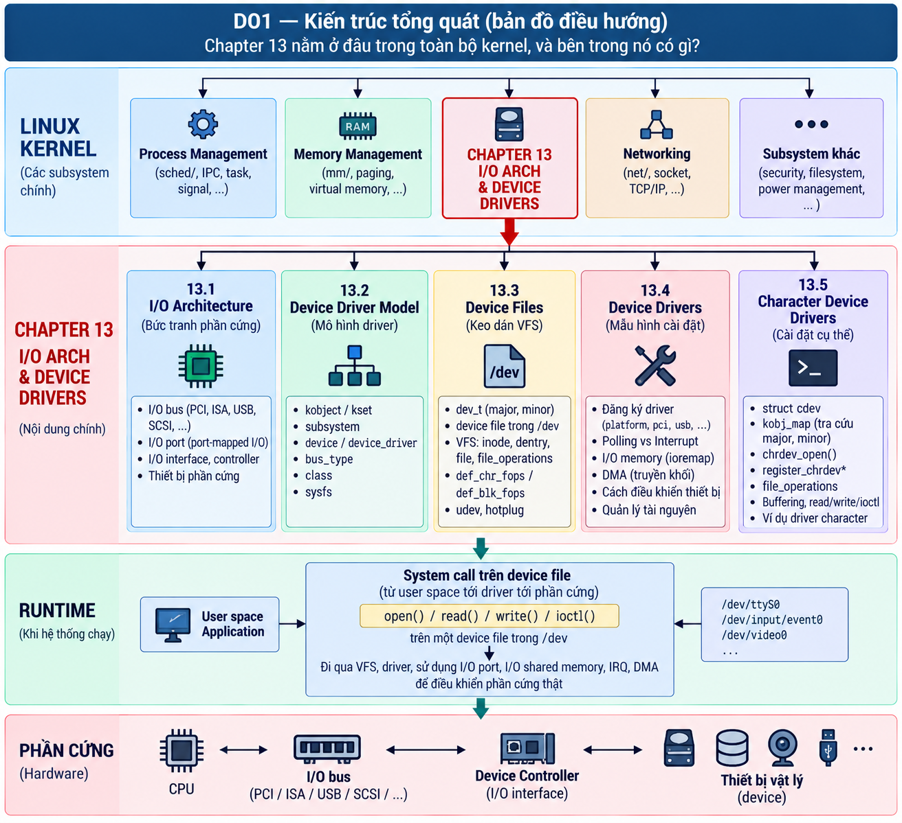
Mô hình tư duy (Mental Model)
Hãy hình dung Chapter 13 gồm ba lớp đồng tâm: (1) lớp dây nối vật lý — port, interface, controller; (2) lớp sổ sách — device driver model — cho mỗi mẩu phần cứng một cái tên, một chỗ đứng trong cây, và một "nhà" trong sysfs; và (3) lớp phiên dịch — device file + file_operations — cho phép các lời gọi read()/write() bình thường chạm được vào lớp (1) mà user space không cần biết gì về lớp (2) hay phần cứng.
Kiến Trúc Toàn Cục & Theo Lớp
Model
device/driver/bus/class
sysfs
def_chr_fops/def_blk_fops
udev
của Device Driver
polling/interrupt
I/O memory, DMA
Device
chrdev_open()
chiến lược buffering
Cái này nằm ở đâu? (khung tái sử dụng — xuất hiện lại ở mọi mục lớn)
Linux → Kernel → I/O subsystem → Chapter 13 → một trong {Kiến trúc I/O, Device Driver Model, Device Files, Device Drivers, Character Device Drivers} → struct/hàm cụ thể bạn đang học ngay lúc này.
13.1 Kiến Trúc I/O
Cái này nằm ở đâu?
Linux → Kernel → Chapter 13 → 13.1 Kiến trúc I/O → I/O port / I/O interface / device controller / I/O shared memory
NGUỒN SÁCH Để một máy tính hoạt động, phải có các đường dẫn dữ liệu cho phép thông tin chảy giữa CPU, RAM, và các thiết bị I/O. Những đường dẫn này gọi là bus, đóng vai trò kênh giao tiếp chính bên trong máy tính. Một system bus điển hình là PCI; các loại bus khác đang dùng gồm ISA, EISA, MCA, SCSI và USB. Cùng một máy tính thường có nhiều loại bus khác nhau, nối với nhau bằng các thiết bị phần cứng gọi là bridge. Hai bus tốc độ cao được dành riêng cho lưu lượng bộ nhớ: frontside bus nối CPU với bộ điều khiển RAM, còn backside bus nối CPU trực tiếp với cache phần cứng ngoài; host bridge nối system bus với frontside bus. Mỗi thiết bị I/O chỉ được gắn vào đúng một bus duy nhất.
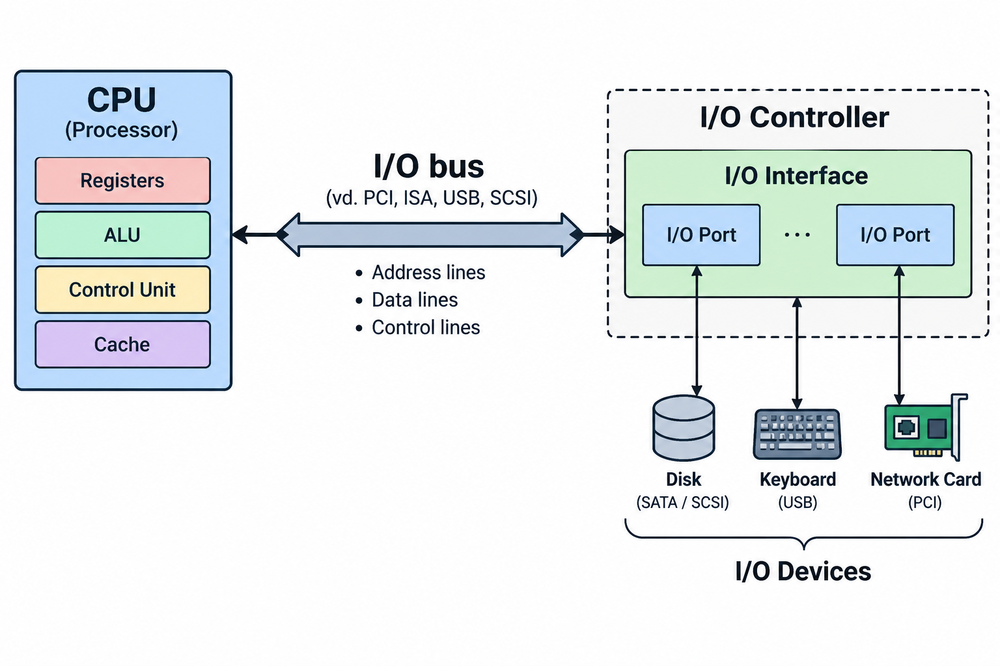
Nguồn: Hình 13-1 "Kiến trúc I/O của PC" NGUỒN SÁCH — vẽ lại bằng ASCII. I/O bus nối tới mỗi thiết bị qua tối đa ba thành phần phần cứng: I/O port, I/O interface, và device controller.
13.1.1 I/O Port
NGUỒN SÁCH Mỗi thiết bị nối vào I/O bus có tập địa chỉ I/O riêng của nó, gọi là I/O port. Trong kiến trúc IBM PC, không gian địa chỉ I/O cung cấp tới 65.536 I/O port 8-bit; hai port 8-bit liên tiếp có thể được coi là một port 16-bit (phải bắt đầu ở địa chỉ chẵn), và hai port 16-bit liên tiếp có thể coi là một port 32-bit (phải bắt đầu ở địa chỉ là bội số của 4). Bốn chỉ thị hợp ngữ — in, ins, out, outs — cho phép CPU đọc/ghi trực tiếp một I/O port. I/O port cũng có thể được ánh xạ vào bộ nhớ (memory-mapped) trong không gian địa chỉ vật lý, để CPU dùng các chỉ thị bình thường như mov/and/or; phần cứng hiện đại ưa cách này hơn vì nhanh hơn và có thể kết hợp với DMA.
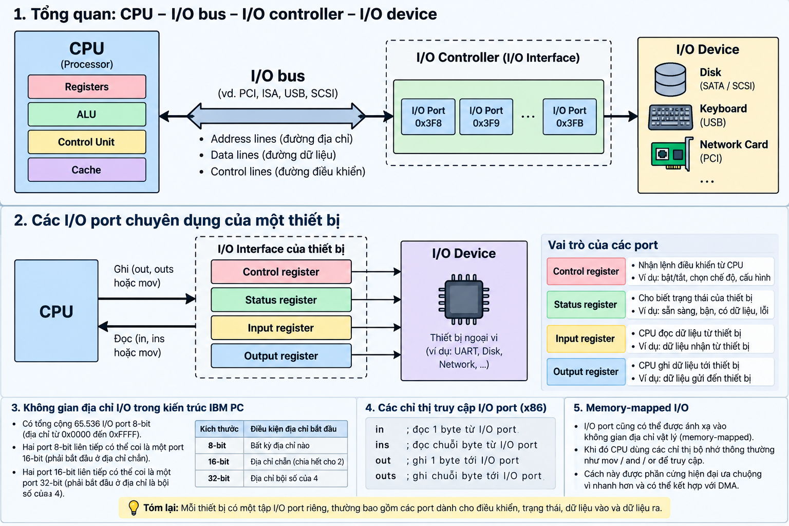
Nguồn: Hình 13-2 "Các I/O port chuyên dụng" NGUỒN SÁCH. CPU ghi lệnh vào control register, đọc trạng thái thiết bị từ status register, đọc dữ liệu từ input register, và ghi dữ liệu vào output register. Cùng một port thường được dùng chồng cho nhiều hơn một vai trò để giảm chi phí.
Truy cập I/O Port
NGUỒN SÁCH Kernel bọc các chỉ thị hợp ngữ thô trong các hàm hỗ trợ:
| Họ hàm | Mục đích |
|---|---|
inb(), inw(), inl() | Đọc 1, 2, hoặc 4 byte liên tiếp từ một I/O port (hậu tố b/w/l = byte/word/long). |
inb_p(), inw_p(), inl_p() | Giống trên, sau đó thực hiện một chỉ thị "giả" để tạo khoảng nghỉ (pause). |
outb(), outw(), outl() | Ghi 1, 2, hoặc 4 byte liên tiếp vào một I/O port. |
outb_p(), outw_p(), outl_p() | Giống trên, sau đó có chỉ thị pause. |
insb(), insw(), insl() | Đọc một dãy byte liên tiếp, theo nhóm 1/2/4, từ một I/O port; độ dài là tham số. |
outsb(), outsw(), outsl() | Ghi một dãy byte, theo nhóm 1/2/4, vào một I/O port. |
NGUỒN SÁCH Việc phát hiện I/O port nào đã được gán cho thiết bị nào là khó, đặc biệt trên hệ thống dùng bus ISA: driver thường phải "mù quáng" ghi thử vào một I/O port để dò thiết bị; nếu port đó đã bị thiết bị khác dùng, máy có thể sập. Để tránh, kernel theo dõi các I/O port đã gán bằng "resource". Một resource biểu diễn một khoảng địa chỉ I/O port có thể được gán độc quyền cho một driver.
resource của I/O port Tại sao dùng cây thay vì danh sách phẳng?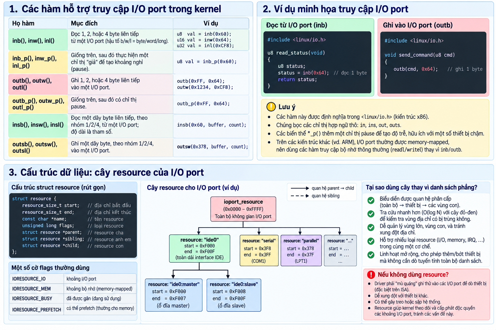
NGUỒN SÁCH Quy tắc: dải của mỗi node phải là dải con của node cha. Ví dụ này (bộ điều khiển IDE chia thành dải con master/slave) lấy nguyên từ sách.
Cấu trúc dữ liệu — struct resource
| Kiểu | Trường | Mô tả |
|---|---|---|
const char * | name | Mô tả chủ sở hữu của resource |
unsigned long | start | Điểm bắt đầu của dải resource |
unsigned long | end | Điểm kết thúc của dải resource |
unsigned long | flags | Các cờ khác nhau |
struct resource * | parent | Con trỏ tới node cha trong cây resource |
struct resource * | sibling | Con trỏ tới một sibling trong cây resource |
struct resource * | child | Con trỏ tới con đầu tiên trong cây resource |
NGUỒN SÁCH Table 13-1. Các con của một node được gom trong danh sách mà phần tử đầu là child; sibling trỏ tới node kế tiếp trong danh sách đó.
Thẻ hàm — request_region() / allocate_resource() / release_region() Quản lý resource
- Mục đích
request_resource()gán một dải cho một thiết bị I/O;allocate_resource()tìm một dải trống có kích thước/canh lề cho trước rồi gán nó (chủ yếu dùng bởi driver PCI, vốn có thể cấu hình để dùng số port bất kỳ);release_resource()giải phóng một dải.request_region()/release_region()là hai hàm rút gọn của hai hàm trên, chuyên cho I/O port.- Vì sao nó tồn tại?
- Nếu không có nó, hai driver có thể "mù quáng" chiếm cùng I/O port và làm sập máy khi va chạm.
- Đầu vào
- Gốc của cây resource (vd.
ioport_resource) + địa chỉ của mộtresourcemô tả dải mong muốn. - Đầu ra / Hiệu ứng phụ
- Dải được đánh dấu độc quyền đang dùng trong cây, hoặc trả lỗi/NULL nếu chồng lấn một đăng ký sẵn có.
- Quan sát được
- NGUỒN SÁCH Toàn bộ cây các dải I/O port đang được gán có thể đọc từ
/proc/ioports.
13.1.2 I/O Interface
NGUỒN SÁCH Một I/O interface là mạch phần cứng nằm giữa một nhóm I/O port và device controller tương ứng: nó dịch giá trị trong port thành lệnh/dữ liệu cho thiết bị, và theo chiều ngược lại cập nhật port đóng vai trò status register để phản ánh thay đổi trạng thái thiết bị. Nó cũng có thể phát IRQ qua Programmable Interrupt Controller thay mặt thiết bị. Có hai loại:
| Loại | Mô tả | Ví dụ (từ sách) |
|---|---|---|
| I/O interface tùy biến (custom) | Dành riêng cho một thiết bị cụ thể; đôi khi controller nằm chung card với interface. Thiết bị có thể là internal hoặc external. | Interface bàn phím, interface đồ họa (có frame buffer + ROM riêng), interface đĩa (vd. IDE, cáp 40 dây tới controller trên chính ổ đĩa), interface chuột bus, interface mạng (Ethernet/IEEE 802.3 phổ biến nhất) |
| I/O interface đa dụng (general-purpose) | Nối nhiều loại thiết bị ngoài khác nhau. | Cổng song song (1 byte một lần), cổng nối tiếp (1 bit một lần, chip UART), PCMCIA, SCSI (tới 8 thiết bị trên SCSI-2, 16+ trên Wide SCSI-2/SCSI-3), USB (tốc độ cao, có thể thay thế các thiết bị ngoại vi vốn nối qua cổng song song/nối tiếp/SCSI) |
13.1.3 Device Controller
NGUỒN SÁCH Một thiết bị phức tạp có thể cần một device controller để điều khiển nó. Controller (1) diễn dịch các lệnh mức cao từ I/O interface và buộc thiết bị thực hiện hành động cụ thể bằng chuỗi tín hiệu điện phù hợp, và (2) chuyển đổi/diễn dịch tín hiệu điện từ thiết bị và cập nhật status register qua I/O interface. Ví dụ điển hình là bộ điều khiển đĩa, biến lệnh mức cao "ghi khối dữ liệu này" thành các thao tác mức thấp như "đặt đầu đọc vào đúng track" và "ghi dữ liệu trong track." Bộ điều khiển đĩa hiện đại rất tinh vi, vì chúng có thể giữ dữ liệu đĩa trong cache tốc độ cao trên board và sắp xếp lại các yêu cầu mức cao của CPU cho tối ưu với hình học đĩa thật. Thiết bị đơn giản hơn — Programmable Interrupt Controller (Ch.4) và Programmable Interval Timer (Ch.6) — không có device controller riêng. Một số thiết bị còn mang bộ nhớ riêng trên board, gọi là I/O shared memory (vd. hàng chục MB RAM frame-buffer trên card đồ họa) — được bàn chi tiết ở 13.4 Device Drivers.
Mô hình tư duy
Hãy hình dung chuỗi I/O bus → I/O interface → device controller → device như một đường ống phiên dịch, mỗi tầng nói một ngôn ngữ mức cao hơn tầng dưới nó: tín hiệu điện thô trên bus → thanh ghi địa chỉ được bằng I/O port → lệnh mức cao → hành động vật lý của thiết bị. Cây resource chẳng qua là một sổ đăng ký để hai driver không bao giờ tranh nhau cùng địa chỉ mức thấp.
Nếu chỉ nhớ 5 điều
- Mỗi thiết bị chỉ gắn vào đúng một bus; loại bus định hình cả phần cứng lẫn driver.
- I/O port có thể truy cập qua chỉ thị
in/outchuyên dụng hoặc qua memory-mapped; thiết bị hiện đại ưa memory-mapped I/O. - Kernel ngăn va chạm port bằng cây
resource(request_region/release_region), xem được ở/proc/ioports. - I/O interface là hạ tầng chung (song song/nối tiếp/USB/SCSI…); device controller là logic dịch chuyên biệt cho từng thiết bị (vd. bộ điều khiển đĩa).
- Một số thiết bị mang RAM riêng ("I/O shared memory") mà kernel phải ánh xạ vào không gian địa chỉ tuyến tính của nó để dùng được.
13.2 Mô Hình Device Driver
Cái này nằm ở đâu?
Linux → Kernel → Chapter 13 → 13.2 Device Driver Model → sysfs / kobject / kset / subsystem / device / driver / bus / class
NGUỒN SÁCH Các phiên bản Linux trước đây chỉ cung cấp cho người viết driver những dịch vụ cơ bản: cấp phát bộ nhớ, giữ chỗ địa chỉ I/O hoặc một đường IRQ, cài đặt một interrupt handler. Phần cứng cũ cồng kềnh và hai thiết bị dù cùng bus cũng ít điểm chung, nên một mô hình thống nhất chưa đáng để làm. Điều đó thay đổi khi các loại bus như PCI đặt ra những đòi hỏi mạnh, chung cho thiết kế phần cứng: quản lý nguồn điện (power management), plug and play, và hot-plugging. Riêng quản lý nguồn điện phải được làm theo một thứ tự toàn cục, chính xác (vd. phải đưa ổ đĩa vào chế độ standby trước bộ điều khiển của nó, chứ không phải ngược lại, nếu không sẽ không thể gửi lệnh cho ổ đĩa). Linux 2.6 đưa vào device driver model — các cấu trúc dữ liệu và hàm hỗ trợ dùng chung, cho một góc nhìn thống nhất về mọi bus, device và driver trong hệ thống.
13.2.1 Filesystem sysfs
NGUỒN SÁCH sysfs là một filesystem đặc biệt, giống /proc, thường được mount vào /sys. Trong khi /proc phơi ra các nội bộ kernel tùy ý, sysfs được tạo ra riêng để phơi bày quan hệ phân cấp giữa các thành phần của device driver model, theo cách có cấu trúc hơn. Các thư mục cấp cao nhất của nó:
| Thư mục | Nội dung |
|---|---|
block | Các block device, không phụ thuộc bus mà chúng gắn vào. |
devices | Mọi thiết bị phần cứng mà kernel nhận diện, tổ chức theo bus đang gắn. |
bus | Các bus có trong hệ thống. |
drivers | Các device driver đã đăng ký trong kernel. |
class | Các loại thiết bị (âm thanh, mạng, đồ họa…) — một class có thể trải trên nhiều thiết bị ở các bus khác nhau, do các driver khác nhau điều khiển. |
power | Các file để xử lý trạng thái nguồn của một số thiết bị phần cứng. |
firmware | Các file để xử lý firmware của một số thiết bị phần cứng. |
NGUỒN SÁCH Quan hệ giữa các thành phần của mô hình xuất hiện trong sysfs dưới dạng symbolic link. Ví dụ từ sách: /sys/block/sda/device có thể là symlink vào một thư mục con của /sys/devices/pci0000:00 đại diện cho bộ điều khiển SCSI trên bus PCI; và /sys/block/sda/device/block trỏ ngược lại /sys/block/sda, nói rằng thiết bị PCI này là bộ điều khiển của ổ đĩa SCSI đó. Các file thường trong sysfs đại diện cho thuộc tính (attribute) — vd. file dev dưới /sys/block/hda chứa major/minor của ổ đĩa master trên chuỗi IDE đầu tiên.
13.2.2 Kobject
NGUỒN SÁCH Cấu trúc dữ liệu lõi của device driver model là một kobject tổng quát, gắn liền với sysfs: mỗi kobject ứng với đúng một thư mục sysfs. Kobject được nhúng bên trong các đối tượng "container" lớn hơn, mô tả các thành phần thật (descriptor của bus/device/driver là các container điển hình — vd. phân vùng đầu tiên của ổ đĩa IDE đầu tiên ứng với /sys/block/hda/hda1). Việc nhúng một kobject vào container cho phép kernel: giữ bộ đếm tham chiếu cho container, duy trì danh sách/tập phân cấp của các container (vd. một thư mục con cho mỗi phân vùng đĩa), và cung cấp góc nhìn ở chế độ người dùng cho các thuộc tính của container.
Cấu trúc dữ liệu — struct kobject
| Kiểu | Trường | Mô tả |
|---|---|---|
char * | k_name | Con trỏ tới chuỗi chứa tên của container |
char [] | name | Tên của container, nếu vừa trong 20 byte |
struct kref | kref | Bộ đếm tham chiếu cho container |
struct list_head | entry | Con trỏ cho danh sách mà kobject được chèn vào |
struct kobject * | parent | Con trỏ tới kobject cha, nếu có |
struct kset * | kset | Con trỏ tới kset chứa nó |
struct kobj_type * | ktype | Con trỏ tới descriptor kiểu của kobject |
struct dentry * | dentry | Con trỏ tới dentry của file sysfs tương ứng |
NGUỒN SÁCH Table 13-2. kref là một struct k_ref bọc một trường refcount duy nhất — kobject_get()/kobject_put() tăng/giảm nó; khi về 0, tài nguyên của container được giải phóng và phương thức release của ktype chạy (thường chỉ định nghĩa khi container được cấp phát động — nó giải phóng chính container). ktype còn mang một con trỏ sysfs_ops (bảng thao tác sysfs) và danh sách thuộc tính mặc định.
13.2.2.1 Kobject, kset, và subsystem
NGUỒN SÁCH Các kobject được tổ chức thành cây phân cấp thông qua kset: một kset là tập hợp các kobject cùng loại (tức nhúng trong cùng một loại container).
| Kiểu | Trường | Mô tả |
|---|---|---|
struct subsystem * | subsys | Con trỏ tới descriptor subsystem |
struct kobj_type * | ktype | Con trỏ tới descriptor kiểu kobject của kset |
struct list_head | list | Đầu danh sách các kobject nằm trong kset |
struct kobject | kobj | Kobject nhúng (xem văn bản) |
struct kset_hotplug_ops * | hotplug_ops | Con trỏ tới bảng callback để lọc kobject và xử lý hot-plug |
NGUỒN SÁCH Table 13-3. Một kset nhúng kobj của chính nó, và đây chính là thứ mà các kobject bên trong kset trỏ tới qua trường parent của chúng — vậy nên một kset dựa vào một kobject ở mức cao hơn để đếm tham chiếu và liên kết trong cây. kset_get()/kset_put() đơn giản là gọi kobject_get()/kobject_put() trên kobject nhúng đó. Vì kset nhúng một kobject, một kset có thể tự trở thành thành viên của một kset ở mức cao hơn. Tập hợp các kset được gọi là subsystem, biểu diễn bằng struct subsystem chỉ có hai trường: kset (một kset nhúng chứa các kset thuộc subsystem) và rwsem (một semaphore đọc-ghi bảo vệ mọi thứ nằm đệ quy bên trong subsystem). subsys_get()/subsys_put() điều chỉnh bộ đếm tham chiếu của kobject nhúng trong kset nhúng đó.
NGUỒN SÁCH Vẽ lại từ Hình 13-3. Subsystem bus chứa subsystem pci, subsystem này chứa kset drivers, kset này chứa kobject serial với một file thuộc tính new-id.
13.2.2.2 Đăng ký kobject, kset, và subsystem
NGUỒN SÁCH Nguyên tắc chung: muốn một kobject/kset/subsystem xuất hiện trong cây sysfs, trước tiên phải đăng ký (register) nó. Thư mục của một kobject luôn xuất hiện trong thư mục của kobject cha (nên các kobject cùng một kset xuất hiện trong chính thư mục của kset đó) — cấu trúc cây sysfs phản ánh đúng cây kobject đã đăng ký.
| Hàm | Hiệu ứng |
|---|---|
kobject_register() | Khởi tạo một kobject và thêm thư mục tương ứng vào sysfs. Trước khi gọi, caller phải đặt trường kset của kobject trỏ tới kset cha, nếu có. |
kobject_unregister() | Xóa thư mục của một kobject khỏi sysfs. |
kset_register() / kset_unregister() | Hàm bọc tiện lợi quanh kobject_register()/kobject_unregister() dành cho kset. |
subsystem_register() / subsystem_unregister() | Tương tự, cho subsystem. |
sysfs_create_file() | Cho địa chỉ một kobject + một descriptor attribute, tạo file đặc biệt tương ứng trong thư mục của kobject. |
sysfs_create_link() | Tạo symbolic link cho một kobject cho trước bên trong thư mục của một kobject khác (biểu diễn quan hệ không phải cha-con). |
13.2.3 Các Thành Phần Của Device Driver Model
13.2.3.1 Device — struct device
| Kiểu | Trường | Mô tả |
|---|---|---|
struct list_head | node | Con trỏ cho danh sách các device anh em (sibling) |
struct list_head | bus_list | Con trỏ cho danh sách các device cùng loại bus |
struct list_head | driver_list | Con trỏ cho danh sách device của driver |
struct list_head | children | Đầu danh sách các device con |
struct device * | parent | Con trỏ tới device cha |
struct kobject | kobj | Kobject nhúng |
char [] | bus_id | Vị trí của device trên bus đang gắn |
struct bus_type * | bus | Con trỏ tới bus đang gắn |
struct device_driver * | driver | Con trỏ tới driver điều khiển |
void * | driver_data | Dữ liệu riêng cho driver |
void * | platform_data | Dữ liệu riêng cho driver kiểu cũ (legacy) |
struct dev_pm_info | power | Thông tin quản lý nguồn |
unsigned long | detach_state | Trạng thái nguồn cần vào khi gỡ driver |
unsigned long long * | dma_mask | Mask DMA của device |
unsigned long long | coherent_dma_mask | Mask cho DMA coherent của device |
struct list_head | dma_pools | Đầu danh sách các buffer DMA tổng hợp |
struct dma_coherent_mem * | dma_mem | Con trỏ tới descriptor bộ nhớ DMA coherent của device |
void (*)(struct device *) | release | Callback để giải phóng descriptor device |
NGUỒN SÁCH Table 13-4. Mọi đối tượng device được gom trong subsystem toàn cục devices_subsys (/sys/devices). Device tạo thành phân cấp cha/con: một device là "cha" của các device "con" nếu các con không thể hoạt động nếu thiếu cha (vd. một bridge PCI↔USB là cha của mọi device trên bus USB đó). Điều này phản ánh vào cấu trúc thư mục sysfs dưới /sys/devices. get_device()/put_device() điều chỉnh bộ đếm của kobject nhúng; device_register()/device_unregister() thêm/xóa device khỏi mô hình. Thường device được nhúng tĩnh trong một descriptor riêng của bus — vd. PCI device được mô tả bằng struct pci_dev, có trường dev chính là device nhúng.
13.2.3.2 Driver — struct device_driver
| Kiểu | Trường | Mô tả |
|---|---|---|
char * | name | Tên của device driver |
struct bus_type * | bus | Con trỏ tới descriptor của bus chứa các device được hỗ trợ |
struct semaphore | unload_sem | Ngăn việc gỡ driver; được giải phóng khi bộ đếm tham chiếu về 0 |
struct kobject | kobj | Kobject nhúng |
struct list_head | devices | Đầu danh sách mọi device mà driver hỗ trợ |
struct module * | owner | Module cài đặt driver, nếu có |
int (*)(struct device *) | probe | Dò xem một device (kiểm tra xem driver này có xử lý được không) |
int (*)(struct device *) | remove | Được gọi khi một device bị gỡ |
void (*)(struct device *) | shutdown | Được gọi khi một device bị tắt nguồn |
int (*)(struct device *, u32, u32) | suspend | Được gọi khi một device vào trạng thái tiết kiệm điện |
int (*)(struct device *, u32) | resume | Được gọi khi một device trở lại công suất đầy đủ |
NGUỒN SÁCH Table 13-5. probe chạy khi driver của một bus phát hiện một device có thể do driver này xử lý; remove chạy khi hot-unplug và cũng chạy trên mọi device driver còn quản lý khi bản thân driver bị gỡ. shutdown/suspend/resume xử lý chuyển trạng thái nguồn. get_driver()/put_driver() dùng bộ đếm của kobject nhúng. driver_register()/driver_unregister() thêm/xóa driver khỏi mô hình (và thư mục sysfs của nó). Driver PCI nhúng struct này trong pci_driver.
13.2.3.3 Bus — struct bus_type
| Kiểu | Trường | Mô tả |
|---|---|---|
char * | name | Tên loại bus |
struct subsystem | subsys | Subsystem kobject gắn với loại bus này |
struct kset | drivers | Tập kobject của các driver |
struct kset | devices | Tập kobject của các device |
struct bus_attribute * | bus_attrs | Thuộc tính của bus + phương thức xuất chúng ra sysfs |
struct device_attribute * | dev_attrs | Thuộc tính của device + phương thức xuất ra sysfs |
struct driver_attribute * | drv_attrs | Thuộc tính của driver + phương thức xuất ra sysfs |
int (*)(struct device *, struct device_driver *) | match | Kiểm tra xem một driver cho trước có hỗ trợ một device cho trước không |
int (*)(struct device *, char **, int, char *, int) | hotplug | Được gọi khi một device đang được đăng ký |
int (*)(struct device *, u32) | suspend | Lưu trạng thái phần cứng và đổi mức nguồn |
int (*)(struct device *) | resume | Đổi mức nguồn và khôi phục trạng thái phần cứng |
NGUỒN SÁCH Table 13-6. Mọi subsystem bus_type được gom trong bus_subsys, gắn với /sys/bus (nên vd. có thư mục /sys/bus/pci). Subsystem của mỗi bus thường chỉ có hai kset là drivers và devices; vì thư mục kobject của device đã tồn tại dưới /sys/devices rồi, nên kset devices của subsystem theo bus chỉ lưu các symbolic link trỏ về đó. bus_for_each_drv() / bus_for_each_dev() duyệt qua các phần tử của hai danh sách driver và device. match thường chỉ đơn giản là tìm định danh của device trong bảng định danh được hỗ trợ của driver. hotplug thêm thông tin riêng của bus, truyền dưới dạng biến môi trường cho chương trình ở chế độ người dùng được thông báo về device mới (xem Đăng ký Device Driver).
13.2.3.4 Class
NGUỒN SÁCH Mỗi class được mô tả bằng một đối tượng class; mọi class thuộc subsystem class_subsys, gắn với /sys/class (vd. /sys/class/input). Mỗi đối tượng class cũng nhúng một subsystem riêng. Một class giữ danh sách các descriptor class_device, mỗi descriptor đại diện cho một logical device thuộc class đó; class_device có trường dev trỏ về một descriptor device thật — nhưng có thể có nhiều class_device cùng trỏ tới cùng một device, vì một thiết bị vật lý có thể chứa nhiều logical sub-device, mỗi cái cần một giao diện chế độ người dùng riêng (DSP, mixer, cổng game… của một sound card). Các driver cùng class được kỳ vọng cung cấp cùng chức năng cho user space. Quan trọng cho phần tiếp theo: mỗi class_device nhúng một kobject với file thuộc tính dev, chứa số major và minor của device file cần dùng để chạm tới logical device đó.
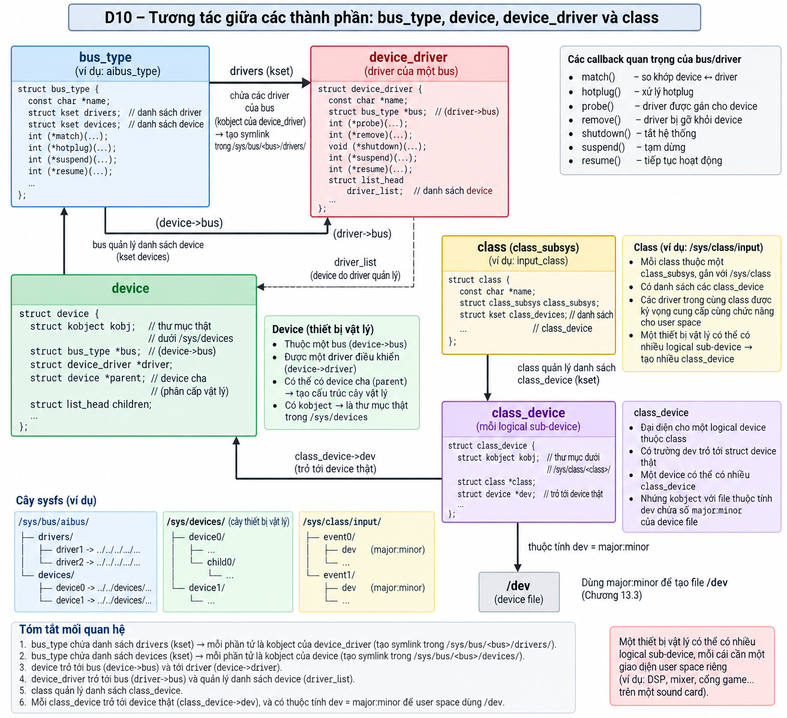
| A | Quan hệ | B |
|---|---|---|
kobject | nhúng-trong | container (device / device_driver / bus_type / kset / class / cdev …) |
kset | nhóm | các kobject cùng loại container |
subsystem | nhóm | các kset |
device | trỏ-tới (driver) | device_driver |
device | trỏ-tới (bus) | bus_type |
device_driver | liệt-kê | device (qua danh sách devices) |
bus_type.match() | quyết-định | device_driver nào xử lý device |
class_device | tham-chiếu-tới | device (nhiều-tới-một) |
thuộc tính class_device.dev | công-bố | major:minor để udev tạo file /dev |
Đầu-Cuối: Chuỗi Gọi Hàm Đăng Ký Device / Driver
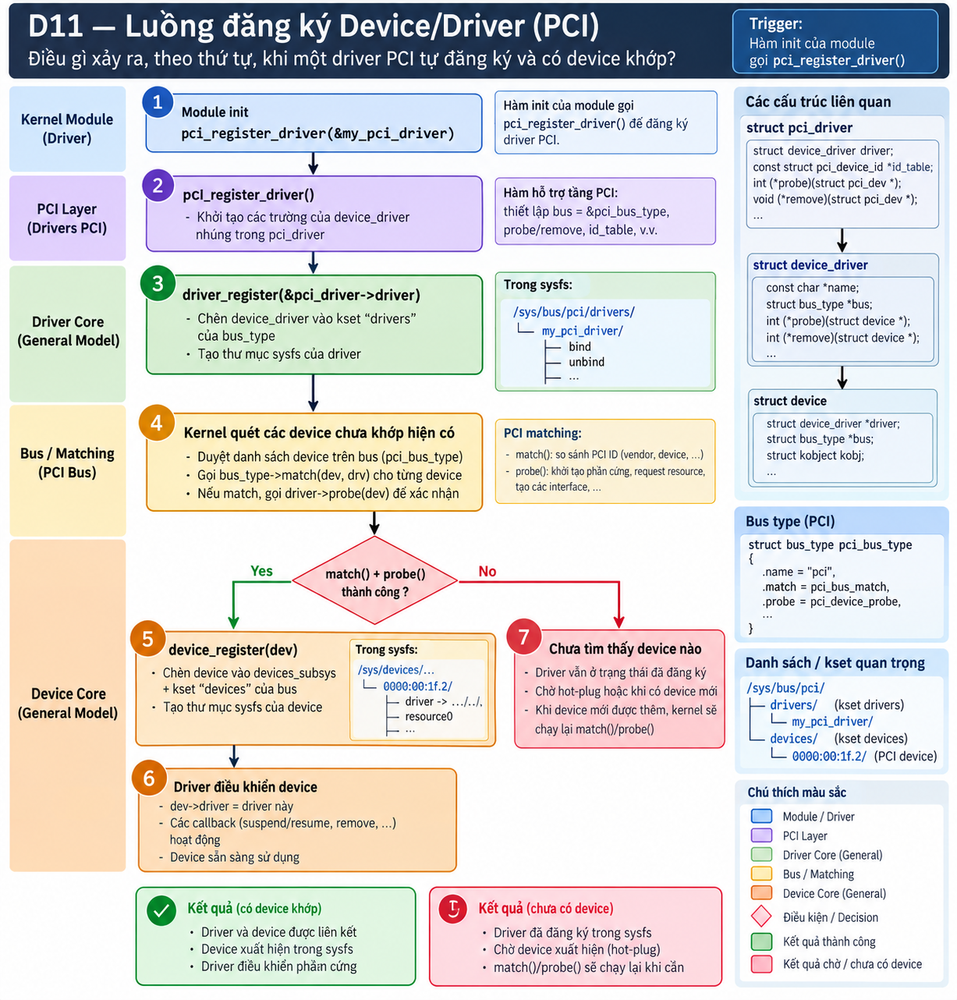
TỔNG HỢP ghép lại từ các phát biểu riêng lẻ của sách về driver_register(), bus_type.match, device_driver.probe và device_register() ở 13.4.1 Đăng ký Device Driver và mục này.
Mô hình tư duy
Hãy nghĩ về device driver model theo kiểu "sysfs là cái cây, kobject là các node." Một kobject không bao giờ xuất hiện một mình — nó luôn là "thẻ thành viên" của ai đó để vào cây đó (một bus, một device, một driver, một class, một kset). Đếm tham chiếu (kref), vị trí thư mục (parent), và thành viên tập hợp (kset) là ba việc duy nhất mà một kobject trần làm; mọi thứ khác (thuộc tính, hành vi hotplug, dò tìm) thuộc về container hoặc về đối tượng bus/driver/class bọc nó.
Nếu chỉ nhớ 5 điều
- Một kobject ⇔ một thư mục sysfs. Luôn luôn đúng.
- kobject ⊂ kset ⊂ subsystem là hệ phân cấp chứa đựng; mỗi mức lồng đúng vào đường dẫn sysfs của mức trên nó.
device,device_driver,bus_typelà ba trụ cột;bus_type.match()+device_driver.probe()quyết định ai điều khiển cái gì.class/class_devicetồn tại thuần để cho user space một giao diện ổn định, không phụ thuộc bus, và để công bố major:minor qua thuộc tínhdev.- Thứ tự đăng ký quan trọng cho quản lý nguồn: con phải suspend trước cha, resume sau cha.
13.3 Tệp Thiết Bị (Device Files)
Cái này nằm ở đâu?
Linux → Kernel → Chapter 13 → 13.3 Device Files → số major/minor → xử lý ở VFS → udev
NGUỒN SÁCH Các hệ thống kiểu Unix được xây trên khái niệm file như một container byte tuần tự. Thiết bị I/O được coi là các file đặc biệt gọi là device file, nên chính những system call dùng cho file thường (vd. write()) cũng chạy được trên thiết bị — vd. write() trên /dev/lp0 gửi dữ liệu tới máy in. Device file có hai loại:
- Block — dữ liệu có thể được đánh địa chỉ ngẫu nhiên và thời gian truyền một khối gần như hằng số, nhỏ (ổ đĩa cứng, đĩa mềm, CD-ROM, DVD).
- Character — dữ liệu hoặc không thể đánh địa chỉ ngẫu nhiên (sound card), hoặc có thể nhưng thời gian truy cập phụ thuộc nhiều vào vị trí (băng từ).
NGUỒN SÁCH Card mạng là một ngoại lệ đáng chú ý — thiết bị phần cứng không có device file tương ứng nào cả.
NGUỒN SÁCH Một device file là file thật trong một filesystem; inode của nó không cần con trỏ tới khối dữ liệu trên đĩa (không có dữ liệu file), nhưng phải định danh thiết bị phần cứng: theo truyền thống là một loại (character/block) cộng một số major (định danh loại thiết bị/driver — mọi device file cùng loại và cùng major dùng chung một bộ thao tác file) và một số minor (định danh một thiết bị cụ thể trong nhóm chia sẻ cùng major). System call mknod() tạo một device file, với tên, loại, và major/minor cho trước.
| Tên | Loại | Major | Minor | Mô tả |
|---|---|---|---|---|
/dev/fd0 | block | 2 | 0 | Đĩa mềm |
/dev/hda | block | 3 | 0 | Ổ đĩa IDE đầu tiên |
/dev/hda2 | block | 3 | 2 | Phân vùng chính thứ hai của ổ IDE đầu tiên |
/dev/hdb | block | 3 | 64 | Ổ đĩa IDE thứ hai |
/dev/hdb3 | block | 3 | 67 | Phân vùng chính thứ ba của ổ IDE thứ hai |
/dev/ttyp0 | char | 3 | 0 | Terminal |
/dev/console | char | 5 | 1 | Console |
/dev/lp1 | char | 6 | 1 | Máy in song song |
/dev/ttyS0 | char | 4 | 64 | Cổng serial đầu tiên |
/dev/rtc | char | 10 | 135 | Đồng hồ thời gian thực (real-time clock) |
/dev/null | char | 1 | 3 | Thiết bị null ("hố đen") |
NGUỒN SÁCH Table 13-7. Lưu ý block (3,0) và character (3,0) là hai thiết bị khác nhau — hai không gian đánh số độc lập nhau. Tên của device file không có ý nghĩa gì với kernel: một file tên /tmp/disk loại block, major 3 minor 0, hoàn toàn tương đương /dev/hda. Một số ứng dụng lại giả định tên quy ước cụ thể (vd. chương trình liên lạc giả định cổng serial đầu tiên là /dev/ttyS0).
13.3.1 Xử Lý Device File Ở Chế Độ Người Dùng
NGUỒN SÁCH Theo truyền thống, major/minor mỗi cái 8-bit (≤65.536 file mỗi loại) — không đủ cho hệ thống lớn (vd. hơn 16 ổ SCSI × 15 phân vùng đã vượt registry truyền thống trong Documentation/devices.txt / include/linux/major.h). Linux 2.6 mở rộng dev_t thành giá trị 32-bit, chia thành 12-bit major / 20-bit minor (macro MAJOR/MINOR trích xuất, MKDEV mã hóa; device file mã hóa 16-bit cũ vẫn được xử lý đúng để tương thích ngược). Các số bổ sung không được cấp phát tĩnh sẵn — cách được ưa chuộng hiện nay là hoàn toàn động, cả về cấp số lẫn tạo device file.
13.3.1.1 Cấp số thiết bị động
NGUỒN SÁCH Một driver có thể yêu cầu một dải số thiết bị chính xác, hoặc đơn giản nhờ kernel cấp bất kỳ dải nào đang trống (xem Đăng ký Device Driver). Driver mới vì vậy không cần một mục trong registry chính thức nữa. Nhưng khi đó device file không thể tạo sẵn một lần rồi dùng mãi — nó phải được tạo ngay sau khi driver khởi tạo xong, với đúng số mà kernel vừa cấp. Device driver model cung cấp đường xuất khẩu: major/minor được công bố trong các file thuộc tính dev dưới các thư mục con của /sys/class.
13.3.1.2 Tạo device file động
NGUỒN SÁCH Bộ công cụ udev (các chương trình ở chế độ người dùng) tự động hóa /dev: lúc khởi động, /dev được làm rỗng, sau đó một chương trình udev quét các thư mục con của /sys/class để tìm file dev; với mỗi file tìm thấy, nó tạo device file tương ứng trong /dev. Khi một thiết bị xuất hiện sau đó — module chứa driver được nạp, hoặc một thiết bị hot-pluggable như thiết bị USB được cắm vào — kernel sinh một tiến trình chạy script chế độ người dùng /sbin/hotplug (đường dẫn có thể cấu hình qua /proc/sys/kernel/hotplug), truyền thông tin thiết bị dưới dạng biến môi trường; script đó (và udev, nếu có cài) sẽ tạo device file mới ngay lập tức.
13.3.2 Xử Lý Device File Ở VFS
NGUỒN SÁCH Device file nằm trong cây thư mục nhưng về bản chất khác hẳn file/thư mục thường: truy cập một file thường là chạm vào khối dữ liệu trong một phân vùng qua một filesystem, còn truy cập một device file chỉ đơn thuần là điều khiển phần cứng (vd. một tiến trình có thể truy cập một device file để đọc nhiệt độ phòng từ một nhiệt kế số nối với máy tính). Việc che giấu khác biệt này khỏi ứng dụng là trách nhiệm của VFS: nó thay đổi bộ thao tác file mặc định của một device file ngay khi mở, để mỗi system call trên đó biến thành lời gọi tới một hàm liên quan tới thiết bị, thay vì hàm của filesystem đang chứa nó.
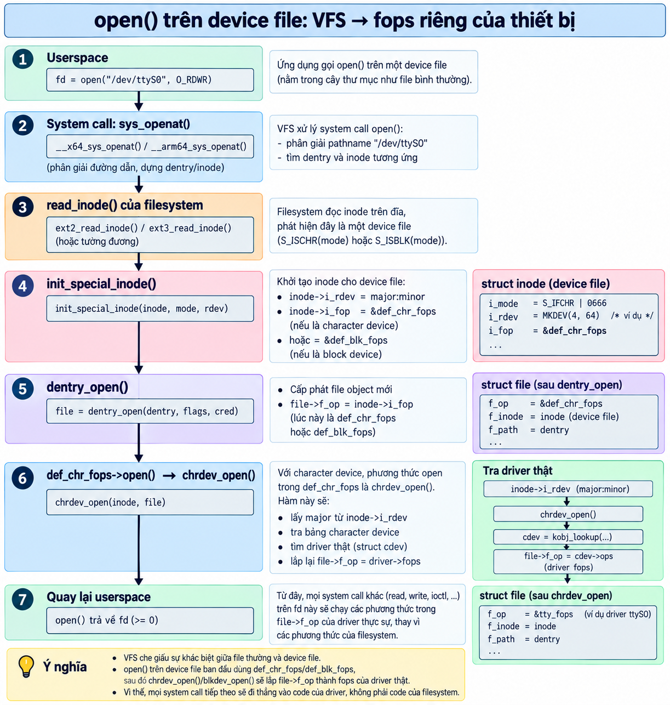
NGUỒN SÁCH Symbolic link trỏ tới device file hoạt động y hệt device file, nhờ cơ chế phân giải tên thông thường của VFS (Ch.12 "Pathname Lookup").
Mô hình tư duy
Một device file là một "vé thông hành", không phải nơi chứa dữ liệu: inode của nó chỉ mang một loại + cặp (major,minor). Mở nó là một cú chuyển giao hai bước — trước tiên VFS thay vào một bảng file_operations tổng quát "đây là thiết bị" (def_chr_fops/def_blk_fops), sau đó phương thức open của bảng tổng quát này (với char device là chrdev_open(), 13.5.2) mới thay vào bảng THẬT của driver. Sau bước chuyển giao thứ hai, VFS hoàn toàn đứng ngoài cuộc.
Nếu chỉ nhớ 5 điều
- Danh tính của một device file là (loại, major, minor) — tên của nó không có ý nghĩa với kernel.
- Linux 2.6
dev_t= 12-bit major + 20-bit minor, đóng gói trong 32 bit;MAJOR/MINOR/MKDEVchuyển đổi qua lại. - Số hiệu thiết bị và device file ngày nay đều được cấp phát động; udev/hotplug điền
/devdựa trên những gìsysfscông bố. init_special_inode()là điểm bản lề: nó thiết lậpi_rdevvà chọndef_blk_fops/def_chr_fops.- Mở một device file là một cú thay
file_operationshai bước: bảng tổng quát cho device file, rồi bảng thật của driver.
13.4 Device Driver
Cái này nằm ở đâu?
Linux → Kernel → Chapter 13 → 13.4 Device Drivers → đăng ký → khởi tạo → giám sát (polling/interrupt) → I/O memory → DMA → mức độ hỗ trợ
NGUỒN SÁCH Một device driver là tập hợp các hàm kernel cài đặt các thao tác chuẩn của VFS (open, read, lseek, ioctl, …) cho một thiết bị phần cứng. Vì mỗi thiết bị có bộ điều khiển I/O khác nhau, do đó lệnh và thông tin trạng thái khác nhau, hầu hết thiết bị I/O đều cần driver riêng. Các driver chủ yếu khác nhau ở mức hỗ trợ dành cho ứng dụng chế độ người dùng, và ở chiến lược buffering.
13.4.1 Đăng Ký Device Driver
NGUỒN SÁCH Mỗi syscall trên một device file được kernel dịch thành lời gọi tới một hàm phù hợp của driver tương ứng — nhưng chỉ khi driver đó đã đăng ký: cấp phát một descriptor device_driver mới, chèn nó vào device driver model, và liên kết nó với (các) device file tương ứng. Truy cập một device file mà driver tương ứng chưa đăng ký sẽ trả về -ENODEV. Nếu driver được biên dịch tĩnh vào kernel, việc đăng ký diễn ra ở giai đoạn khởi tạo kernel. Nếu driver được biên dịch thành module, nó đăng ký khi module được nạp (và có thể tự hủy đăng ký khi module bị gỡ).
NGUỒN SÁCH Ví dụ: một driver PCI tổng quát cấp phát một descriptor pci_driver (dùng bởi tầng kernel PCI) và gọi pci_register_driver(). Bên trong, pci_driver nhúng một device_driver; pci_register_driver() chỉ khởi tạo các trường của descriptor nhúng đó rồi gọi driver_register() để chèn driver vào device driver model. Khi một driver đăng ký, kernel tìm phần cứng chưa được hỗ trợ mà driver này có thể xử lý được, dựa vào phương thức match của bus_type liên quan, và phương thức probe của device_driver; nếu tìm thấy một device khớp, kernel cấp phát một đối tượng device và gọi device_register() để chèn nó vào device driver model. (Xem lại Sơ đồ D11 ở trên cho toàn bộ luồng.)
13.4.2 Khởi Tạo Device Driver
NGUỒN SÁCH Đăng ký driver và khởi tạo nó là hai việc khác nhau. Một driver đăng ký càng sớm càng tốt để user space dùng được nó qua device file; nhưng nó được khởi tạo vào thời điểm muộn nhất có thể, vì khởi tạo nghĩa là cấp phát tài nguyên quý giá của hệ thống, khiến chúng không còn sẵn cho driver khác. Ví dụ (Ch.4): việc gán IRQ thường được làm động, ngay trước khi dùng, vì nhiều thiết bị có thể chia sẻ chung một đường IRQ. Các tài nguyên khác được gán muộn: page frame cho buffer DMA, và chính kênh DMA (đối với thiết bị không phải PCI đời cũ như driver đĩa mềm).
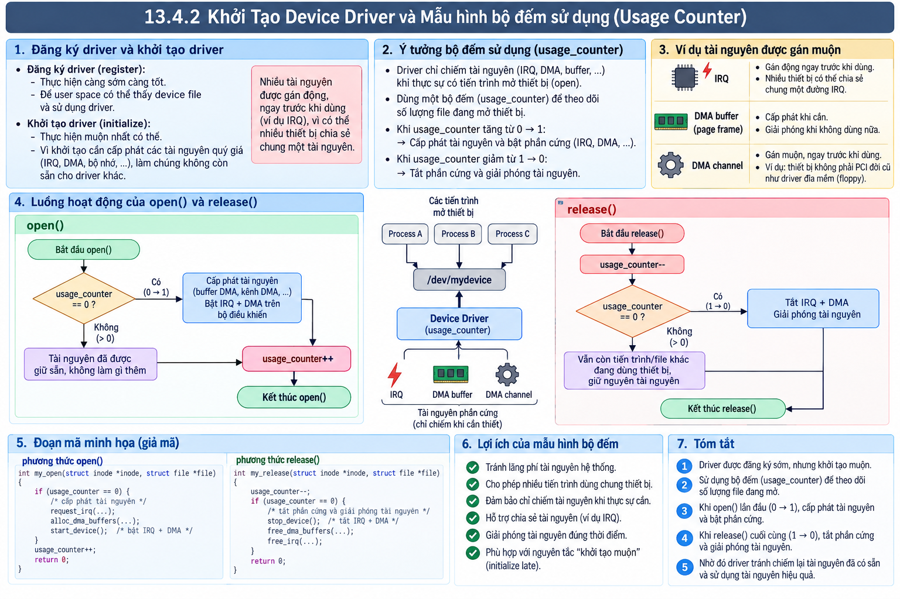
NGUỒN SÁCH Chính xác hơn, bộ đếm sử dụng theo dõi số file object tham chiếu tới device file, vì các tiến trình clone có thể chia sẻ chung một file object.
13.4.3 Giám Sát Thao Tác I/O
NGUỒN SÁCH Thời gian một thao tác I/O thường không thể đoán trước (vị trí cơ học của đầu đọc đĩa, sự kiện thật sự ngẫu nhiên như gói tin đến trên card mạng, hay yếu tố con người như người dùng nhấn phím hoặc kẹt giấy máy in). Driver khởi động một thao tác cần một kỹ thuật giám sát báo hiệu hoặc sự kết thúc của thao tác I/O, hoặc một time-out. Hai kỹ thuật: chế độ polling và chế độ interrupt.
13.4.3.1 Chế độ polling
NGUỒN SÁCH CPU liên tục kiểm tra (poll) status register của thiết bị cho tới khi giá trị của nó báo hiệu thao tác đã hoàn tất — cùng nguyên lý với một spin lock bận (Ch.5). Cũng cần kiểm tra time-out:
for (;;) {
if (read_status(device) & DEVICE_END_OPERATION) break;
if (--count == 0) break;
}NGUỒN SÁCH Biến count được khởi tạo trước vòng lặp và giảm dần mỗi lần lặp, tạo ra một time-out tương đối. Một time-out chính xác hơn có thể đọc bộ đếm tick jiffies (Ch.6) mỗi lần lặp và so sánh với giá trị đọc được trước khi vào vòng lặp. Nếu thời gian cần để hoàn tất thao tác I/O tương đối lớn, cỡ mili giây, cách làm này trở nên kém hiệu quả vì CPU lãng phí chu kỳ máy khi chờ; khi đó nên tự nguyện nhường CPU sau mỗi lần poll bằng cách chèn một lời gọi schedule() vào trong vòng lặp.
13.4.3.2 Chế độ interrupt
NGUỒN SÁCH Chỉ dùng được nếu bộ điều khiển I/O có khả năng báo hiệu, qua một đường IRQ, sự kết thúc của một thao tác I/O. Sách đi qua một ví dụ đầy đủ: một driver đơn giản cho character device đầu vào, khi người dùng gọi read() trên device file tương ứng, một lệnh input được gửi tới control register của thiết bị. Sau một khoảng thời gian không đoán trước được, thiết bị đặt một byte dữ liệu vào input register và phát ngắt. Hai hàm cài đặt driver này: foo_read() (phương thức read) và foo_interrupt() (interrupt handler).
ssize_t foo_read(struct file *filp, char *buf, size_t count,
loff_t *ppos)
{
foo_dev_t * foo_dev = filp->private_data;
if (down_interruptible(&foo_dev->sem))
return -ERESTARTSYS;
foo_dev->intr = 0;
outb(DEV_FOO_READ, DEV_FOO_CONTROL_PORT);
wait_event_interruptible(foo_dev->wait, (foo_dev->intr == 1));
if (put_user(foo_dev->data, buf))
return -EFAULT;
up(&foo_dev->sem);
return 1;
}irqreturn_t foo_interrupt(int irq, void *dev_id, struct pt_regs *regs)
{
foo->data = inb(DEV_FOO_DATA_PORT);
foo->intr = 1;
wake_up_interruptible(&foo->wait);
return 1;
}NGUỒN SÁCH Descriptor riêng của driver, kiểu foo_dev_t, gồm: một semaphore sem bảo vệ thiết bị khỏi truy cập đồng thời, một wait queue wait, một cờ intr được đặt khi thiết bị phát ngắt, và một buffer một byte data được interrupt handler ghi và read đọc. Địa chỉ của nó thường được cất trong filp->private_data hoặc một biến toàn cục. Lưu ý foo_interrupt() không dùng đến bất kỳ tham số nào trong ba tham số của nó — sách gọi đây là "một trường hợp khá phổ biến." Để đơn giản, ví dụ này bỏ qua việc xử lý time-out, thứ nói chung được cài đặt bằng timer tĩnh/động (Ch.6), được đặt trước khi thao tác I/O bắt đầu và gỡ khi nó kết thúc.
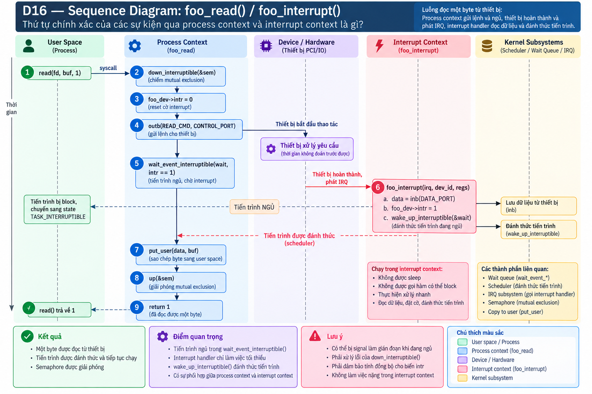
Thẻ hàm — foo_read() Phương thức read Process context
- Lớp
- Character device driver — phương thức
file_operations.read - Mục đích
- Kích hoạt một thao tác đọc trên thiết bị, chặn (block) cho tới khi interrupt handler có dữ liệu, rồi sao chép byte đó sang user space.
- Được gọi bởi
- VFS
sys_read()→vfs_read()→file->f_op->read - Gọi tới
down_interruptible(),outb(),wait_event_interruptible(),put_user(),up()- Execution context
- Process context; có thể ngủ (sleep) (chặn trong
wait_event_interruptible). - Cấu trúc dữ liệu
foo_dev_t(sem, wait, intr, data)- Khóa (locking)
- Semaphore
foo_dev->semtuần tự hóa các tiến trình đọc đồng thời trên cùng thiết bị. - Đường lỗi
-ERESTARTSYSnếu việc chờ semaphore bị một tín hiệu (signal) ngắt;-EFAULTnếu sao chép sang user space thất bại (lưu ý: ví dụ trong sách trả về ở nhánh này mà không giải phóngsem— một điểm đơn giản hóa đáng lưu ý, xem Ngộ nhận thường gặp).- Vì sao nó tồn tại?
- Nó là nửa "process context" của một cái bắt tay hai phía: bản thân nó không thể biết khi nào phần cứng sẵn sàng, nên phải cho tiến trình ngủ và để interrupt handler cung cấp dữ liệu còn thiếu một cách bất đồng bộ.
Thẻ hàm — foo_interrupt() IRQ handler Interrupt context
- Lớp
- Character device driver — interrupt service routine đăng ký qua
request_irq()(Ch.4, không xuất hiện trong đoạn trích này) - Mục đích
- Lấy byte mà thiết bị vừa sinh ra và đánh thức tiến trình đang chặn trong
foo_read(). - Được gọi bởi
- Cơ chế điều phối ngắt của CPU, trên đường IRQ mà thiết bị được nối tới — không được gọi trực tiếp bởi bất kỳ hàm kernel nào.
- Gọi tới
inb(),wake_up_interruptible()- Execution context
- Interrupt context. Không thể ngủ, không thể chiếm mutex/semaphore, phải chạy nhanh.
- Cấu trúc dữ liệu
- Cùng
foo_dev_t, truy cập qua biến/con trỏ toàn cụcfoo. - Vì sao nó tồn tại?
- Đây là đoạn code duy nhất chạy đúng lúc sự kiện phần cứng xảy ra; không có nó, driver sẽ không có cách nào biết "dữ liệu đã sẵn sàng" trừ việc polling.
- Lỗi thường gặp
- Việc không dùng tới bất kỳ tham số nào trong
(irq, dev_id, regs)là bình thường — nhưng quên bảo vệfoo->data/foo->intrkhỏi truy cập đồng thời từ CPU khác mới là lỗi kinh điển mà interrupt handler phải tránh (chưa được xử lý trong ví dụ đơn giản hóa này).
13.4.4 Truy Cập I/O Shared Memory
NGUỒN SÁCH Tùy theo thiết bị và loại bus, I/O shared memory rơi vào các dải địa chỉ vật lý khác nhau. Với thiết bị ISA, thường là dải 16-bit 0xa0000–0xfffff — "lỗ hổng" giữa 640KB và 1MB (Ch.2). Với thiết bị PCI, nó được ánh xạ vào địa chỉ vật lý 32-bit gần biên 4GB — dễ xử lý hơn nhiều. Card đồ họa AGP còn dùng thêm một Graphics Address Remapping Table (GART) để card có thể trực tiếp đánh địa chỉ các phần của RAM trên bo mạch chủ; từ góc nhìn của kernel, bộ nhớ ánh xạ qua GART được xử lý như mọi loại I/O shared memory khác.
NGUỒN SÁCH Code kernel chỉ chạm vào địa chỉ tuyến tính, nên một địa chỉ vật lý của I/O memory phải được dịch. Trên PC, các địa chỉ vật lý của RAM được ánh xạ, trong lúc khởi tạo kernel, vào đầu gigabyte thứ tư của không gian địa chỉ tuyến tính (giả sử PAGE_OFFSET = 0xc0000000) đơn giản bằng cách OR với hằng số 0xc0000000 — điều này đúng với các địa chỉ nằm trong RAM thật (vd. lỗ hổng ISA tại 0x000b0fe4). Nhưng nó không đúng với I/O memory nằm trên đỉnh RAM vật lý (vd. 0xfc000000), vì chưa có ánh xạ tuyến tính nào cho nó. Trong trường hợp đó, driver phải gọi ioremap() (hoặc ioremap_nocache(), còn tắt luôn cache phần cứng) để tạo một ánh xạ địa chỉ tuyến tính mới — về bản chất giống vmalloc(): nó gọi get_vm_area() để tạo một descriptor vm_struct (Ch.8) có kích thước bằng vùng I/O cần dùng, rồi cập nhật các mục Page Table kernel liên quan.
/* ngây thơ / chỉ đúng với địa chỉ nằm trong RAM đã ánh xạ: */ t1 = *((unsigned char *)(0xc00b0fe4)); /* ĐÚNG: 0x000b0fe4 nằm trong lỗ hổng ISA */ t2 = *((unsigned char *)(0xfc000000)); /* SAI: chưa có ánh xạ tuyến tính nào */ /* dạng đúng, khả chuyển cho I/O memory nằm trên RAM: */ io_mem = ioremap(0xfb000000, 0x200000); /* ánh xạ 2 MB bắt đầu từ 0xfb000000 */ t2 = *((unsigned char *)(io_mem + 0x100000)); /* giải phóng sau đó bằng: iounmap(io_mem); */
NGUỒN SÁCH Trên các kiến trúc khác PC, đôi khi không thể chạm vào I/O shared memory chỉ bằng cách dereference một địa chỉ tuyến tính, nên Linux định nghĩa các hàm truy cập độc lập kiến trúc, bắt buộc phải dùng thay vì con trỏ thô:
| Hàm | Mục đích |
|---|---|
readb(), readw(), readl() | Đọc 1/2/4 byte từ một vị trí I/O shared memory |
writeb(), writew(), writel() | Ghi 1/2/4 byte vào một vị trí I/O shared memory |
memcpy_fromio(), memcpy_toio() | Sao chép một khối giữa I/O shared memory và bộ nhớ động thường |
memset_io() | Điền một vùng I/O shared memory bằng một giá trị cố định |
io_mem = ioremap(0xfb000000, 0x200000); t2 = readb(io_mem + 0x100000);
13.4.5 Direct Memory Access (DMA)
NGUỒN SÁCH Trong kiến trúc PC nguyên bản, chỉ CPU mới có thể lái bus địa chỉ/dữ liệu (là "bus master" duy nhất). Với PCI, mọi ngoại vi có mạch phù hợp đều có thể là bus master; ngày nay mọi PC đều có mạch DMA phụ trợ, có thể truyền dữ liệu giữa RAM và một thiết bị I/O mà không cần thêm sự can thiệp của CPU, và phát ngắt khi hoàn tất. Xung đột khi CPU và mạch DMA cùng truy cập một vị trí bộ nhớ đồng thời được giải quyết bởi một mạch phần cứng gọi là trọng tài bộ nhớ (memory arbiter) (Ch.5). DMA phù hợp với driver đĩa và các thiết bị truyền nhiều byte cùng lúc — với các truyền nhỏ, CPU sao chép trực tiếp hiệu quả hơn vì chi phí thiết lập DMA tương đối cao.
13.4.5.1 DMA đồng bộ và bất đồng bộ
| Chế độ | Được kích hoạt bởi | Ví dụ trong sách |
|---|---|---|
| DMA đồng bộ (synchronous) | Một tiến trình | Một sound card đang phát âm thanh: ứng dụng ghi các sample vào một device file cho DSP của sound card; driver dồn các sample này vào một kernel buffer; đồng thời driver ra lệnh cho sound card sao chép các sample từ kernel buffer sang DSP theo một nhịp thời gian định trước; mỗi ngắt hoàn tất khiến driver kiểm tra xem còn sample nào trong buffer chưa và kích hoạt một lần truyền DMA nữa nếu cần. |
| DMA bất đồng bộ (asynchronous) | Thiết bị phần cứng | Một card mạng nhận một frame (gói tin) từ LAN: ngoại vi lưu frame trong I/O shared memory riêng của nó rồi phát ngắt; driver của card mạng xác nhận ngắt, rồi ra lệnh cho ngoại vi sao chép frame từ I/O shared memory vào một kernel buffer bằng DMA; khi truyền xong, card mạng phát một ngắt khác, và driver báo cho tầng mạng phía trên biết về frame mới. |
13.4.5.2 – 13.4.5.6 Hàm hỗ trợ DMA, bus address, cache coherency
NGUỒN SÁCH Một driver nên vừa độc lập kiến trúc vừa độc lập bus xét về mặt DMA; các hàm hỗ trợ DMA của kernel che giấu những khác biệt đó. Có hai nhóm hàm hỗ trợ: một nhóm cũ hơn, chỉ dành cho PCI, độc lập kiến trúc; một nhóm mới hơn, độc lập cả bus lẫn kiến trúc.
NGUỒN SÁCH Bus address: bên cạnh địa chỉ logic/tuyến tính (dùng nội bộ bởi CPU) và địa chỉ vật lý (địa chỉ mà CPU thật sự lái trên bus dữ liệu), còn có loại địa chỉ thứ tư — bus address — dùng bởi mọi thiết bị phần cứng ngoại trừ CPU để lái bus dữ liệu. Vì một truyền DMA diễn ra mà không có CPU can thiệp, kernel phải lập trình các I/O port của DMA/thiết bị với địa chỉ bus của buffer bộ nhớ liên quan, chứ không phải địa chỉ tuyến tính hay vật lý. Trên 80x86, bus address trùng với địa chỉ vật lý; các kiến trúc khác (SPARC, Alpha) có một I/O-MMU ánh xạ địa chỉ vật lý → bus address, và mọi driver dùng DMA phải lập trình đúng IO-MMU trước. Độ rộng bus khác nhau: bus address của ISA dài 24 bit (nên DMA ISA trên 80x86 bị giới hạn ở 16MB thấp nhất — vì vậy buffer cho loại DMA này phải lấy từ vùng ZONE_DMA qua cờ GFP_DMA); PCI nguyên bản định nghĩa bus address 32-bit (nhưng một số phần cứng PCI, vốn thiết kế ban đầu cho ISA, vẫn không thể đánh địa chỉ trên 0x00ffffff); chuẩn PCI-X dùng bus address 64-bit và cho phép mạch DMA đánh địa chỉ trực tiếp vùng nhớ cao. Kiểu bus address tổng quát là dma_addr_t — một số nguyên 32-bit trên 80x86, hoặc 64-bit nếu kernel hỗ trợ PAE (Ch.2). pci_set_dma_mask()/dma_set_mask() kiểm tra xem bus có chấp nhận một kích thước bus address cho trước hay không, và nếu có, đăng ký kích thước đó cho ngoại vi.
NGUỒN SÁCH Cache coherency: kiến trúc không nhất thiết đảm bảo tính nhất quán giữa cache phần cứng và mạch DMA ở mức phần cứng, nên các hàm ánh xạ DMA phải tính đến điều này — nếu không một thiết bị có thể DMA-đọc dữ liệu cũ vẫn còn nằm dirty chỉ trong cache line. Hai kiểu ánh xạ DMA:
| Kiểu ánh xạ | Còn gọi là | Đảm bảo | Hàm hỗ trợ |
|---|---|---|---|
| Ánh xạ DMA coherent | "đồng bộ" / "consistent" | Kernel đảm bảo không có vấn đề cache-coherency: mỗi lần CPU ghi đều lập tức hiển thị cho thiết bị và ngược lại. | pci_alloc_consistent() / dma_alloc_coherent() (cấp phát + ánh xạ; trả về địa chỉ tuyến tính và bus), pci_free_consistent() / dma_free_coherent() (giải phóng) |
| Ánh xạ DMA streaming | "bất đồng bộ" / "non-coherent" | Bản thân driver phải tự xử lý coherency bằng các lời gọi đồng bộ hóa tường minh. | pci_map_single() / dma_map_single() (ánh xạ một buffer có sẵn, trả về bus address), pci_unmap_single() / dma_unmap_single() (bỏ ánh xạ); pci_dma_sync_single_for_device() / dma_sync_single_for_device() trước khi truyền RAM→thiết bị, pci_dma_sync_single_for_cpu() / dma_sync_single_for_cpu() trước khi CPU đọc buffer thiết bị→RAM; pci_map_page()/dma_map_page() và pci_unmap_page()/dma_unmap_page() cho buffer nằm trong vùng nhớ cao (high memory) |
NGUỒN SÁCH Trên 80x86 không bao giờ có vấn đề cache-coherency với DMA — phần cứng tự "snoop" cache — nên một driver viết riêng cho x86 có thể chọn kiểu ánh xạ nào cũng được; chúng gần như tương đương ở đó, và các hàm đồng bộ hóa gần như không làm gì cả. Trên nhiều kiến trúc khác (MIPS, SPARC, một số PowerPC) phần cứng không phải lúc nào cũng snoop, nên vấn đề coherency là có thật. Quy tắc kinh nghiệm: nếu buffer được CPU và DMA truy cập theo cách không đoán trước, ánh xạ coherent là bắt buộc (vd. cấu trúc lệnh của các adapter SCSI); còn lại thường nên dùng ánh xạ streaming, vì xử lý ánh xạ coherent có thể cồng kềnh và chậm hơn trên một số kiến trúc. Buffer streaming thường được cấp phát bằng bộ cấp phát trang theo vùng hoặc bộ cấp phát tổng quát (Ch.8) và được ánh xạ ngay trước, bỏ ánh xạ ngay sau, mỗi lần truyền.
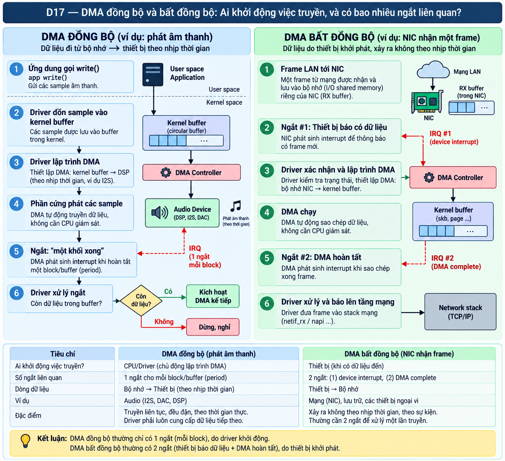
13.4.6 Các Mức Hỗ Trợ Của Kernel
NGUỒN SÁCH Kernel không hỗ trợ đầy đủ mọi thiết bị có thể có; có ba mức:
| Mức | Mô tả | Ví dụ trong sách |
|---|---|---|
| Không hỗ trợ gì cả | Ứng dụng nói chuyện trực tiếp với I/O port của thiết bị qua in/out. | Cách X Window System truyền thống xử lý màn hình đồ họa — hiệu quả, nhưng X server không dùng được ngắt phần cứng và cần đặc quyền iopl()/ioperm() (chỉ root, nhưng có thể phơi ra qua setuid, Ch.20) để chạm được I/O port. |
| Hỗ trợ tối thiểu | Kernel nhận diện I/O interface, không nhận diện thiết bị; chương trình người dùng coi nó như một dòng ký tự tuần tự. | Cổng serial và song song — chuột serial được điều khiển trực tiếp bởi ứng dụng (vd. X server); modem serial cần chương trình liên lạc (Minicom, Seyon) hoặc một PPP daemon. |
| Hỗ trợ đầy đủ (extended) | Kernel nhận diện đầy đủ thiết bị phần cứng và tự xử lý I/O interface; thậm chí có thể không có device file nào cả. | Mọi thứ nằm trực tiếp trên I/O bus (ổ đĩa cứng trong máy), và mọi interface đa dụng ngoại trừ serial/song song — USB, PCMCIA, SCSI. |
NGUỒN SÁCH Hỗ trợ tối thiểu giữ kernel nhỏ gọn, nhưng không thể dùng khi thiết bị ngoài cần tương tác sâu với cấu trúc kernel nội bộ (vd. một ổ đĩa cứng tháo rời được, nối qua một interface đa dụng, cần được mount như một filesystem thật — ứng dụng đơn giản là không thể chạm tới các cấu trúc/hàm kernel cần thiết, nên hỗ trợ đầy đủ trở thành bắt buộc). Kernel gần đây cũng hỗ trợ trừu tượng frame buffer (/dev/fb) và Direct Rendering Infrastructure (DRI) cho đồ họa 3D tăng tốc, dù mô hình X server tự làm mọi thứ truyền thống vẫn được dùng rộng rãi. Cuối cùng: các syscall file chuẩn (open/read/write) không phải lúc nào cũng cho ứng dụng toàn quyền điều khiển thiết bị bên dưới — giao diện mẫu số chung nhỏ nhất của VFS không có chỗ cho lệnh riêng của thiết bị hay cho việc kiểm tra thiết bị đang ở trạng thái nội bộ nào. Syscall ioctl() ra đời chính để lấp khoảng trống đó, nhận fd của thiết bị, một mã yêu cầu, và một số lượng tham số bổ sung tùy ý (vd. lấy mức âm lượng CD-ROM, hoặc đẩy khay đĩa ra).
Mô hình tư duy
Đăng ký là một lời hứa ("tôi có thể điều khiển các thiết bị khớp ID này"); khởi tạo là một khoản nợ (tài nguyên lấy từ bể chung) — kernel giữ lời hứa rẻ và trì hoãn khoản nợ càng lâu càng tốt. Polling và interrupt là một sự đánh đổi chi phí-CPU / độ trễ, và driver chế độ interrupt luôn được cấu trúc như một vở kịch hai diễn viên: nửa process-context tra tay lắp thiết bị rồi ngủ, và nửa interrupt-context cung cấp kết quả rồi đánh thức — không bao giờ ngược lại. DMA thêm diễn viên thứ ba (chính động cơ DMA) có thể di chuyển byte trong khi cả tiến trình lẫn interrupt handler đều không chạy.
Nếu chỉ nhớ 5 điều
- Đăng ký sớm, khởi tạo muộn — khởi tạo tiêu tốn tài nguyên chung, có hạn (IRQ, kênh DMA, buffer).
- Polling đốt CPU; hãy gọi
schedule()trong vòng lặp hoặc chuyển sang chế độ interrupt khi thời gian chờ vượt quá khoảng một mili giây. - Driver chế độ interrupt là hai nửa: process-context tra tay rồi ngủ, interrupt-context cung cấp rồi đánh thức —
foo_read()/foo_interrupt()là hình mẫu kinh điển. - I/O memory nằm trên RAM thật cần
ioremap()cộng họ hàm truy cậpreadb()/writeb(), không bao giờ dereference con trỏ thô. - Chọn ánh xạ DMA coherent khi CPU và thiết bị cùng truy cập một buffer theo cách không đoán trước; ngược lại nên ưu tiên ánh xạ streaming với các lời gọi
*_sync_single_for_device/cputường minh.
13.5 Character Device Driver
Cái này nằm ở đâu?
Linux → Kernel → Chapter 13 → 13.5 Character Device Drivers → cdev / kobj_map → đăng ký → chrdev_open() → buffering
NGUỒN SÁCH Character device tương đối dễ xử lý — không cần chiến lược buffering tinh vi, không liên quan tới disk cache (dù các char device riêng lẻ khác nhau rất nhiều về độ phức tạp giao thức, từ một chuột bus tới một card serial đa cổng). Block device driver về bản chất phức tạp hơn nhiều — ứng dụng có thể yêu cầu lại cùng một khối nhiều lần, và truy cập thường chậm — và dựa vào các thành phần kernel như page cache và block I/O subsystem, được bàn ở các chương sau. Phần còn lại của §13.5 chỉ tập trung vào character device driver.
Cấu trúc dữ liệu — struct cdev
| Kiểu | Trường | Mô tả |
|---|---|---|
struct kobject | kobj | Kobject nhúng |
struct module * | owner | Module cài đặt driver, nếu có |
struct file_operations * | ops | Con trỏ tới bảng thao tác file của driver |
struct list_head | list | Đầu danh sách các inode, ứng với device file, thuộc character device này |
dev_t | dev | Số major/minor khởi đầu được gán cho driver |
unsigned int | count | Kích thước dải số thiết bị được gán cho driver |
NGUỒN SÁCH Table 13-8. Một driver có thể gắn với cả một dải số thiết bị, không chỉ một số duy nhất — mọi device file có số nằm trong dải đó đều do cùng driver xử lý; count giữ kích thước dải. cdev_alloc() cấp phát động một cdev và khởi tạo kobject của nó sao cho descriptor tự giải phóng khi bộ đếm tham chiếu về 0.
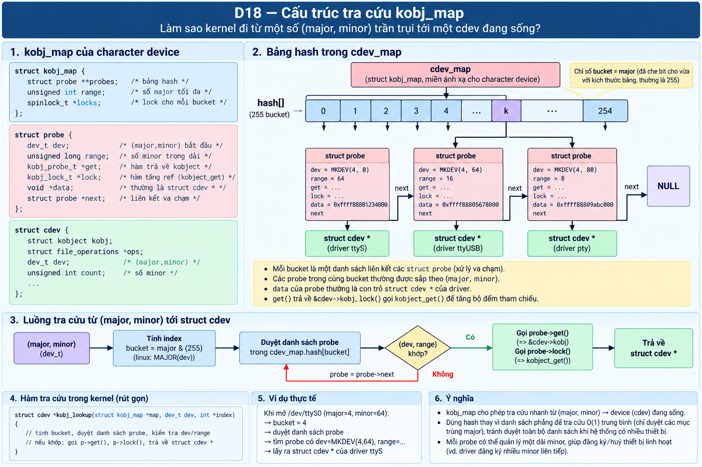
NGUỒN SÁCH cdev_add() đăng ký một cdev: nó điền các trường dev/count, rồi gọi kobj_map(), hàm này chèn dải vào bảng hash (255 entry, đánh chỉ số theo số major) dưới dạng một đối tượng probe có trường data trỏ tới cdev. kobj_lookup() nhận một miền ánh xạ + số thiết bị, tìm trong bảng hash, và trả về kobject của chủ sở hữu dải khớp — với miền character device, đó là kobject nhúng trong cdev sở hữu.
Cấu trúc dữ liệu — struct probe (một entry của bảng hash)
| Kiểu | Trường | Mô tả |
|---|---|---|
struct probe * | next | Phần tử kế tiếp trong danh sách va chạm hash |
dev_t | dev | Số thiết bị khởi đầu (major, minor) của dải |
unsigned long | range | Kích thước của dải |
struct module * | owner | Module cài đặt driver, nếu có |
struct kobject *(*)(dev_t, int *, void *) | get | Dò tìm chủ sở hữu của dải |
int (*)(dev_t, void *) | lock | Tăng bộ đếm tham chiếu của chủ sở hữu |
void * | data | Dữ liệu riêng của chủ sở hữu dải — chính con trỏ cdev |
13.5.1 Cấp Số Thiết Bị
NGUỒN SÁCH Một bảng hash thứ hai, độc lập, tên là chrdevs, theo dõi các gán trọn một số major (255 entry, hash theo bit thấp của số major, danh sách va chạm sắp theo major rồi minor). Các phần tử của nó là char_device_struct:
| Kiểu | Trường | Mô tả |
|---|---|---|
unsigned char_device_struct * | next | Phần tử kế tiếp trong danh sách va chạm hash |
unsigned int | major | Số major của dải |
unsigned int | baseminor | Số minor khởi đầu của dải |
int | minorct | Kích thước dải |
const char * | name | Tên driver xử lý dải này |
struct file_operations * | fops | Không dùng |
struct cdev * | cdev | Con trỏ tới descriptor character device driver |
NGUỒN SÁCH Table 13-10. Hai dải có thể chia sẻ cùng một số major, nhưng dải minor của chúng không được chồng lấn.
NGUỒN SÁCH Có hai cách gán một dải số thiết bị cho một driver:
| Cách | API | Ghi chú |
|---|---|---|
| Được ưu tiên (mọi driver mới) | register_chrdev_region(dev, size, "foo") hoặc alloc_chrdev_region(...) | Dải tùy ý; caller phải tự gọi cdev_add() sau đó — các hàm này không tự gọi nó. |
| Kiểu cũ (legacy) | register_chrdev(major, name, fops) | Dải cố định: một major, minor từ 0–255; caller không được gọi cdev_add() — việc này đã làm sẵn bên trong. |
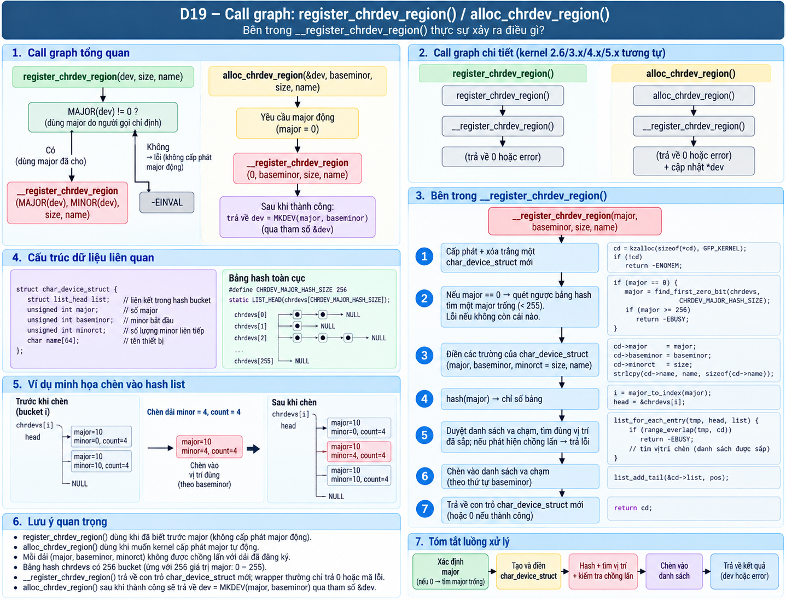
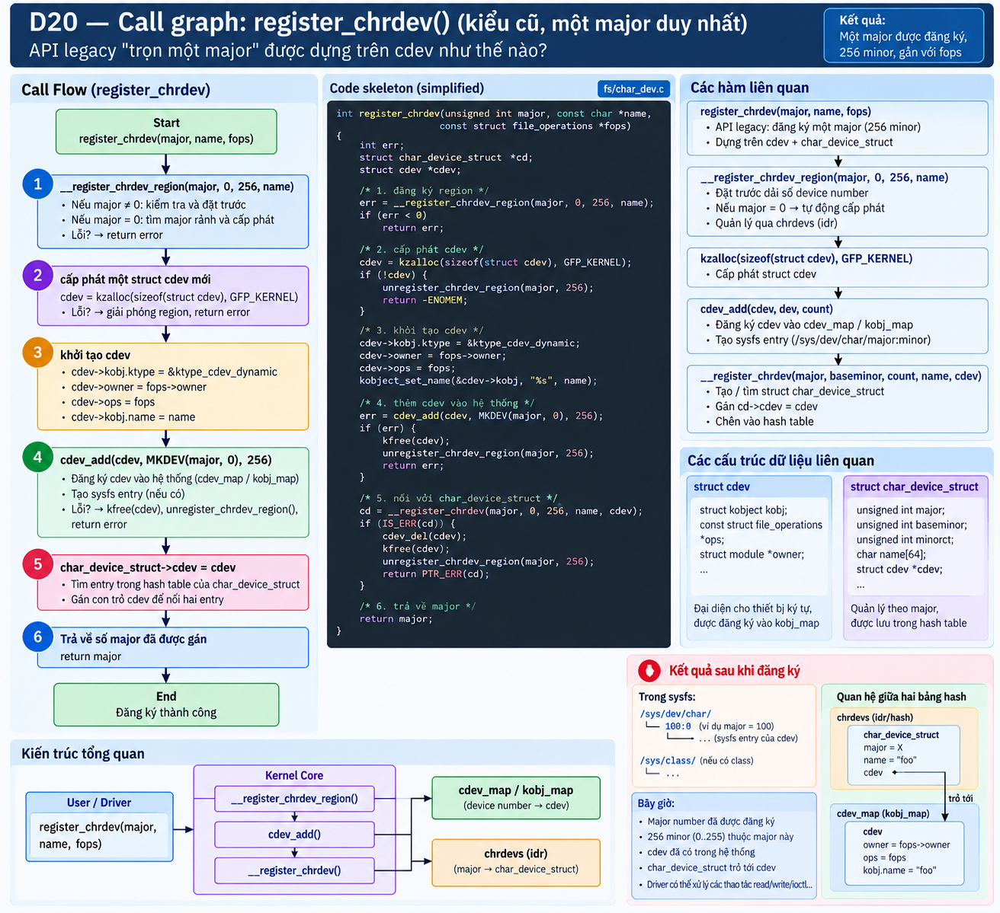
13.5.2 Truy Cập Một Character Device Driver
NGUỒN SÁCH Nhớ lại từ 13.3.2 rằng dentry_open() (được kích hoạt bởi service routine của syscall open()) đặt f_op của device file loại character thành def_chr_fops — một bảng gần như trống, chỉ định nghĩa một phương thức, open = chrdev_open(), mà dentry_open() gọi ngay lập tức.

NGUỒN SÁCH Đây là cú thay file_operations thứ hai và cuối cùng được nhắc tới ở D14 — sau bước 6/7, mọi syscall tiếp theo trên file object này chạy code thật của driver, không còn qua lớp keo dán tổng quát của VFS nữa.
Thẻ hàm — chrdev_open() Phương thức open Process context
- Lớp
- Lớp keo dán character-device tổng quát, giữa VFS và một driver cụ thể
- Mục đích
- Phân giải (major,minor) →
cdevsở hữu →file_operationsthật, rồi lắp bảng đó vào file object. - Được gọi bởi
dentry_open(), với vai trò phương thứcopencủadef_chr_fops- Gọi tới
kobject_get(),kobj_lookup(), và — nếu có định nghĩa — phương thứcopenriêng của driver thật- Đầu vào
inodevàfilpcủa device file đang được mở- Đầu ra / Hiệu ứng phụ
- Đặt
inode->i_cdev,inode->i_cindex, nối inode vàocdev->list, đặtfilp->f_op - Vì sao nó tồn tại?
- Nó là điểm nút duy nhất biến "một device file nào đó vừa được mở" thành "code của driver cụ thể này giờ đã được nối dây" — nếu không có nó, hàm
read_inodecủa mỗi filesystem sẽ phải biết về mọi driver có thể có. - Hàm liên quan
init_special_inode()(thiết lậpi_fop=def_chr_fopsngay từ đầu, 13.3.2),cdev_add()/kobj_map()(điền dữ liệu màkobj_lookup()tìm kiếm)
13.5.3 Chiến Lược Buffering Cho Character Device
NGUỒN SÁCH Sự phân chia block/character không kể hết câu chuyện buffering — một số char device truyền vài byte mỗi thao tác, số khác truyền lượng lớn.
| Hình dạng thiết bị | Chiến lược | Ví dụ trong sách |
|---|---|---|
| Vài byte mỗi thao tác | Đọc từng ký tự một từ input register vào một cấu trúc dữ liệu kernel; sao chép sang user space khi rảnh. Dữ liệu ghi được sao chép từ user space rồi ghi từng đơn vị một vào output register. DMA không đáng dùng — thời gian thiết lập DMA ≈ thời gian di chuyển dữ liệu trực tiếp. | Chuột PS/2: vài byte mỗi lần đọc, mô tả trạng thái nút và vị trí con trỏ. |
| Dữ liệu lớn/tuần tự | Kết hợp DMA (di chuyển cả khối) với một buffer vòng (circular buffer) gồm 2 phần tử trở lên, mỗi phần tử cỡ một khối. Interrupt handler đẩy con trỏ sang một phần tử trống khi một khối mới tới; driver trả lại một phần tử khi đã sao chép xong khối đó sang user space. | Sound card ghi âm từ microphone ở 44,1kHz, sample 16-bit; NIC nhận gói tin (ở đây thời điểm đến là bất đồng bộ/không đoán trước, khác với tính tuần hoàn). |
| Truy cập ngẫu nhiên (đĩa) | Phức tạp hơn nhiều — để dành cho các chương sau (page cache, block I/O subsystem). | Đĩa mềm, CD-ROM, ổ đĩa SCSI. |
NGUỒN SÁCH Buffer vòng làm phẳng các đỉnh tải CPU: dù bên tiêu thụ ở chế độ người dùng tạm thời bị đói do các tác vụ ưu tiên cao hơn, DMA vẫn tiếp tục điền các phần tử buffer vì interrupt handler chạy thay mặt cho bất kỳ tiến trình nào đang hiện hành, độc lập với việc lập lịch của chính bên tiêu thụ. Buffering cho thiết bị tuần tự tương đối dễ vì một buffer không bao giờ bị dùng lại — một ứng dụng âm thanh không thể yêu cầu microphone gửi lại cùng một khối. (Theo sách, Chapter 15 bàn về trường hợp truy cập ngẫu nhiên/đĩa khó hơn nhiều.)
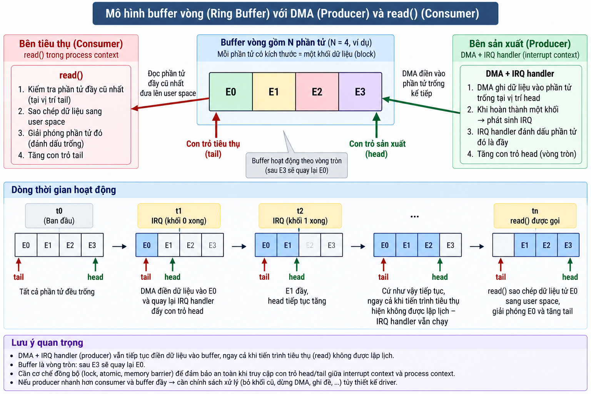
Mô hình tư duy
Đăng ký character device là một hệ thống hai bảng hash đặt trên bộ máy kobject tổng quát: chrdevs là sổ sách thô, trọn-một-major (chủ yếu là legacy), còn cdev_map/kobj_map là tra cứu tinh (major,minor) mà chrdev_open() thực sự truy vấn ở mỗi open(). cdev_add() là cầu nối điền bảng thứ hai từ descriptor riêng của driver. Sau khi chrdev_open() chạy xong, lớp character-device coi như hoàn thành nhiệm vụ — mọi thứ sau đó là code thuần của driver.
Nếu chỉ nhớ 5 điều
struct cdevlà "tay cầm" đăng ký của driver; nó sở hữu một dải[dev, dev+count)số thiết bị và một bảngfile_operations.cdev_add()→kobj_map()chèn driver vào bảng hashcdev_mapmàkobj_lookup()tìm kiếm.- Driver mới:
register_chrdev_region()/alloc_chrdev_region()+ tự gọicdev_add(). Driver legacy:register_chrdev()tự làm cả hai bên trong. chrdev_open()chính là nơi chính xác biến "vừa mở một file /dev" thành "giờ đang chạy code thật của driver" — hãy thuộc lòng 8 bước của nó.- Thiết bị vài-byte sao chép từng byte qua một struct kernel; thiết bị thông lượng cao ghép DMA với một buffer vòng để phần cứng và bên tiêu thụ chạy ở nhịp độ tách rời nhau.
Chỉ Mục Hàm
TỔNG HỢP Mọi hàm được nhắc tới trong chương, gom vào một bảng có thể tìm kiếm được. Vị trí file mang tính khái niệm/kiến thức kernel tổng quát SUY LUẬN — luôn đối chiếu đường dẫn/dòng chính xác với cây source thật bạn đang học (xem Nhận thức về phiên bản).
| Hàm | Thuộc mục | Vai trò | Được gọi bởi | Gọi tới |
|---|---|---|---|---|
inb/outb/… | 13.1 | Truy cập I/O port thô | device driver | chỉ thị CPU in/out |
request_region()/release_region() | 13.1 | Giữ chỗ/giải phóng một dải I/O port | init/cleanup của driver | request_resource()/release_resource() |
allocate_resource() | 13.1 | Tìm + giữ chỗ một dải trống với kích thước cho trước | driver PCI | duyệt cây resource |
kobject_register()/kobject_unregister() | 13.2 | Thêm/xóa thư mục sysfs của một kobject | kset_register, luồng đăng ký device/driver/bus | thao tác thư mục sysfs |
kobject_get()/kobject_put() | 13.2 | Đếm tham chiếu một kobject/container | mọi nơi dùng/giải phóng container | thao tác kref; ktype->release() khi về 0 |
kset_register()/kset_unregister() | 13.2 | Hàm bọc đăng ký một kset | khởi tạo subsystem | kobject_register() |
subsystem_register()/subsystem_unregister() | 13.2 | Hàm bọc đăng ký một subsystem | khởi tạo bus/class | kobject_register() |
sysfs_create_file() | 13.2 | Tạo file thuộc tính cho một kobject | khởi tạo driver/device | nội bộ sysfs |
sysfs_create_link() | 13.2 | Tạo symlink giữa hai thư mục kobject | code bus/class | nội bộ sysfs |
get_device()/put_device() | 13.2 | Đếm tham chiếu một device | code bus/driver | kobject_get()/put() |
device_register()/device_unregister() | 13.2 / 13.4.1 | Thêm/xóa một device khỏi mô hình | luồng probe của driver_register() | kobject_register(), tạo entry /sys/devices |
get_driver()/put_driver() | 13.2 | Đếm tham chiếu một device_driver | code bus | kobject_get()/put() |
driver_register()/driver_unregister() | 13.2 / 13.4.1 | Thêm/xóa một driver khỏi mô hình | pci_register_driver() và các hàm bọc riêng-bus tương tự | kobject_register(), bus_type.match |
bus_for_each_drv()/bus_for_each_dev() | 13.2 | Duyệt danh sách driver/device của một bus | code tầng bus | duyệt danh sách |
pci_register_driver() | 13.4.1 | Hàm bọc đăng ký riêng cho PCI | hàm init module driver PCI | driver_register() |
foo_read() | 13.4.3.2 | Ví dụ phương thức read chế độ interrupt | luồng sys_read của VFS | down_interruptible, outb, wait_event_interruptible, put_user, up |
foo_interrupt() | 13.4.3.2 | Ví dụ interrupt handler | cơ chế điều phối IRQ của CPU | inb, wake_up_interruptible |
ioremap()/ioremap_nocache() | 13.4.4 | Ánh xạ I/O physical memory vào không gian tuyến tính của kernel | khởi tạo driver | get_vm_area(), cập nhật Page Table |
iounmap() | 13.4.4 | Hủy ioremap() | dọn dẹp driver | cập nhật Page Table |
readb/readw/readl/writeb/writew/writel | 13.4.4 | Hàm truy cập I/O-memory khả chuyển | device driver | cài đặt riêng kiến trúc |
memcpy_fromio()/memcpy_toio()/memset_io() | 13.4.4 | Truy cập I/O-memory theo khối | device driver | cài đặt riêng kiến trúc |
pci_set_dma_mask()/dma_set_mask() | 13.4.5.3 | Thỏa thuận kích thước bus-address với tầng bus | khởi tạo driver | tầng bus |
pci_alloc_consistent()/dma_alloc_coherent() | 13.4.5.5 | Cấp phát + ánh xạ coherent một buffer DMA | khởi tạo driver | bộ cấp phát trang, tầng DMA riêng kiến trúc |
pci_free_consistent()/dma_free_coherent() | 13.4.5.5 | Giải phóng một buffer DMA coherent | dọn dẹp driver | bộ cấp phát trang |
pci_map_single()/dma_map_single() | 13.4.5.6 | Ánh xạ một buffer có sẵn cho DMA streaming | đường I/O của driver | IO-MMU / tầng DMA riêng kiến trúc |
pci_unmap_single()/dma_unmap_single() | 13.4.5.6 | Bỏ ánh xạ một buffer DMA streaming | đường I/O của driver | IO-MMU / tầng DMA riêng kiến trúc |
*_sync_single_for_device()/*_sync_single_for_cpu() | 13.4.5.6 | Flush/invalidate cache quanh một lần truyền DMA streaming | đường I/O của driver | hàm flush cache riêng kiến trúc |
pci_map_page()/dma_map_page(), *_unmap_page() | 13.4.5.6 | Ánh xạ DMA streaming cho buffer nằm ở vùng nhớ cao | đường I/O của driver | IO-MMU / tầng DMA riêng kiến trúc |
ioctl() | 13.4.6 | Kênh lệnh riêng của thiết bị, ngoài luồng chuẩn | user space | phương thức ioctl/unlocked_ioctl của driver |
cdev_alloc() | 13.5 | Cấp phát + khởi tạo động một cdev | khởi tạo driver | khởi tạo kobject |
cdev_add() | 13.5 | Đăng ký một cdev vào mô hình | khởi tạo driver, register_chrdev() | kobj_map() |
kobj_map() | 13.5 | Chèn một dải (major,minor) vào bảng hash của một miền ánh xạ | cdev_add() | chèn bảng hash |
kobj_lookup() | 13.5 / 13.5.2 | Tìm kobject chủ sở hữu của một số thiết bị | chrdev_open() | tìm trong bảng hash, probe.get(), probe.lock() |
register_chrdev_region()/alloc_chrdev_region() | 13.5.1.1 | Giữ chỗ một dải (major,minor) (kiểu mới) | khởi tạo driver | __register_chrdev_region() |
__register_chrdev_region() | 13.5.1.1 | Logic lõi giữ chỗ dải | hai hàm trên, và register_chrdev() | chèn bảng hash chrdevs |
register_chrdev() | 13.5.1.2 | Đăng ký kiểu cũ, một major duy nhất | khởi tạo driver legacy | __register_chrdev_region(), cdev_add() |
chrdev_open() | 13.5.2 | Phương thức open của def_chr_fops; phân giải driver + lắp fops thật | dentry_open() | kobject_get(), kobj_lookup(), phương thức open riêng của driver |
init_special_inode() | 13.3.2 | Thiết lập i_rdev/i_fop cho inode của một device file | read_inode của filesystem | — |
dentry_open() | 13.3.2 / 13.5.2 | Cấp phát file object, sao chép i_fop vào f_op, gọi open | service routine của syscall open() | chrdev_open() (với char device) |
mknod() | 13.3 | Tạo một device file với loại/major/minor cho trước | user space / udev | tạo inode ở VFS |
Chỉ Mục Cấu Trúc Dữ Liệu
| Cấu trúc | Mục đích | Chủ sở hữu / Được tạo bởi | Được dùng bởi | Hàm liên quan |
|---|---|---|---|---|
resource | Node trong cây giữ chỗ một dải I/O port (hoặc bộ nhớ) | Device driver, lúc khởi tạo | Bộ kiểm tra va chạm port của kernel; /proc/ioports | request_region, release_region, allocate_resource |
kobject | Node tổng quát của cây device model; ⇔ một thư mục sysfs | Nhúng trong một container, đăng ký qua kobject_register() | Mọi cấu trúc device-model khác | kobject_get/put, kobject_register/unregister |
kset | Tập hợp các kobject cùng loại container | Khởi tạo bus/class/subsystem | Nhóm các device/driver cùng loại | kset_get/put, kset_register/unregister |
subsystem | Tập hợp các kset, cộng một rwsem cho toàn bộ cây con | Khởi tạo mô hình cấp cao nhất (bus_subsys, devices_subsys, class_subsys…) | Gốc của một thư mục sysfs cấp cao nhất | subsys_get/put, subsystem_register/unregister |
device | Descriptor của một thiết bị phần cứng trong mô hình | Descriptor riêng của bus (vd. pci_dev), qua device_register() | bus_type, device_driver, class_device | get_device/put_device, device_register/unregister |
device_driver | Descriptor của một driver trong mô hình | Descriptor riêng của bus (vd. pci_driver), qua driver_register() | bus_type, danh sách device sở hữu | get_driver/put_driver, driver_register/unregister |
bus_type | Descriptor của một loại bus (PCI, USB, …) | Code subsystem của bus, tĩnh hoặc lúc khởi tạo | device.bus, device_driver.bus | bus_for_each_drv/dev, các phương thức match/hotplug/suspend/resume |
class / class_device | Nhóm logical device độc lập bus, phơi ra cho user space | Code subsystem của class | udev (đọc thuộc tính dev) | API (un)register của class SUY LUẬN |
dev_t | Số thiết bị 32-bit (12-bit major / 20-bit minor) | Gán lúc đăng ký driver | Inode (i_rdev), cdev, char_device_struct | MAJOR, MINOR, MKDEV |
cdev | Descriptor character-driver: sở hữu một dải số thiết bị + bảng fops | cdev_alloc() hoặc nhúng trong một struct lớn hơn | kobj_map/cdev_map, i_cdev của inode | cdev_add, cdev_alloc |
probe | Một entry trong danh sách va chạm hash bên trong kobj_map | kobj_map() | kobj_lookup() | phương thức get/lock |
char_device_struct | Bản ghi giữ chỗ trọn-một-major kiểu legacy | __register_chrdev_region() | Bảng hash chrdevs, register_chrdev() | — |
foo_dev_t (ví dụ) | Descriptor riêng cho mỗi thiết bị của driver ví dụ chế độ interrupt | Riêng của driver | foo_read(), foo_interrupt() | — |
Chỉ Mục Sơ Đồ
TỔNG HỢP Nhấn vào bất kỳ dòng nào để nhảy tới sơ đồ đó.
| Mã | Tiêu đề | Câu hỏi nó trả lời |
|---|---|---|
| D01 | Kiến trúc tổng quát | Chapter 13 nằm ở đâu trong toàn bộ kernel, và bên trong có gì? |
| D02 | Mức 0 — Góc nhìn hệ thống | Một read() từ user space cuối cùng chạm vào silicon thế nào? |
| D03 | Mức 1 — Góc nhìn Kernel | Ngoài chương này, kernel còn đang làm gì khác? |
| D04 | Mức 2 — Góc nhìn Chapter | 4 mảnh ghép lớn bên trong Chapter 13 là gì? |
| D05 | Mức 3–6 — Thành phần→Đối tượng→Hàm→Source→HW | Từ một thành phần trừu tượng đi xuống code thật và silicon thế nào? |
| D06 | Góc nhìn tổng quan kiến trúc I/O của PC | Hệ thống phân cấp phần cứng nào nằm giữa CPU và một thiết bị? |
| D07 | Các I/O port chuyên dụng | Các port của một thiết bị đóng vai trò gì? |
| D08 | Cây resource của I/O port | Tại sao dùng cây thay vì danh sách phẳng? |
| D09 | Ví dụ phân cấp Device Driver Model | kobject→kset→subsystem lồng nhau ra sao, ánh xạ vào sysfs thế nào? |
| D10 | Tương tác giữa các thành phần | bus_type, device, device_driver và class liên hệ ra sao? |
| D11 | Luồng đăng ký | Điều gì xảy ra khi một driver PCI đăng ký và có device khớp? |
| D12 | Mã hóa dev_t | major/minor đóng gói vào một giá trị 32-bit ra sao? |
| D13 | Tạo device file động qua udev/hotplug | Làm sao /dev được điền mà không cần bảng tĩnh? |
| D14 | open() trên một Device File | open() dẫn tới gọi code driver thay vì code FS thế nào? |
| D15 | Mẫu hình bộ đếm sử dụng | Làm sao driver tránh chiếm lại tài nguyên đã giữ? |
| D16 | Sequence: foo_read()/foo_interrupt() | Thứ tự chính xác của sự kiện qua process và interrupt context? |
| D17 | DMA đồng bộ và bất đồng bộ | Ai khởi động truyền, có bao nhiêu ngắt? |
| D18 | Cấu trúc tra cứu kobj_map | Làm sao (major,minor) phân giải thành một cdev đang sống? |
| D19 | Call graph: register_chrdev_region() | Bên trong __register_chrdev_region() xảy ra điều gì? |
| D20 | Call graph: register_chrdev() | API legacy được dựng trên cdev thế nào? |
| D21 | chrdev_open() từng bước | Bước nào nối dây một device file với một driver? |
| D22 | Buffer vòng + DMA | Làm sao dữ liệu vẫn chảy khi bên tiêu thụ không được lập lịch? |
Bản Đồ Tri Thức, Dependency Graph & Lộ Trình Học
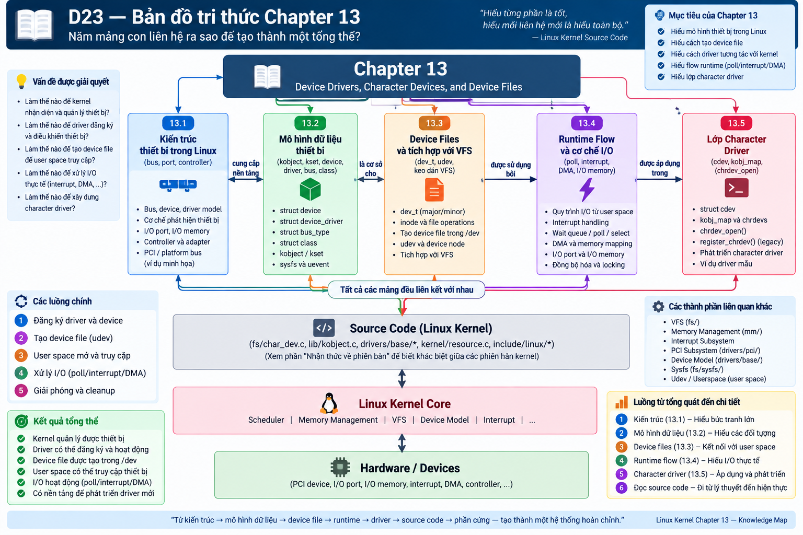
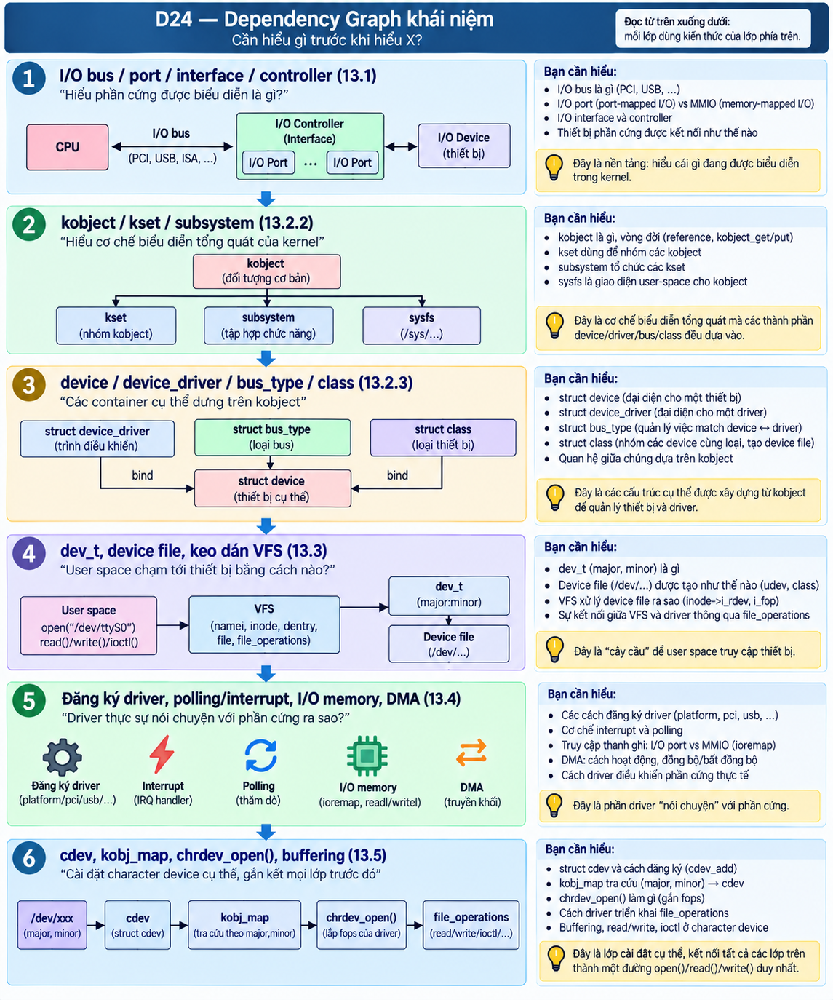
Lộ Trình Học
| Mức | Mục tiêu |
|---|---|
| 1 | Hiểu vấn đề: tại sao VFS lại cần một lớp bên dưới nó? |
| 2 | Hiểu kiến trúc phần cứng: bus → interface → controller → device (13.1). |
| 3 | Hiểu các cấu trúc dữ liệu của device driver model: kobject/kset/subsystem, device/driver/bus/class (13.2). |
| 4 | Hiểu device file: major/minor, dev_t, keo dán VFS, udev (13.3). |
| 5 | Hiểu các mẫu hình runtime của driver: đăng ký/khởi tạo, polling vs interrupt, I/O memory, DMA (13.4). |
| 6 | Đọc source code thật cho cdev, kobj_map, chrdev_open() trên một cây kernel bạn có (13.5 + Labs). |
| 7 | Trace đường open()/read() của một driver thật, đầu-cuối, bằng ftrace/printk (xem Debugging). |
| 8 | Debug: tái tạo một va chạm resource, một wakeup bị bỏ lỡ, hoặc một lỗi coherency DMA trong môi trường test/VM. |
| 9 | Sửa đổi: viết hoặc mở rộng một character device driver tối giản, dùng các mẫu hình từ 13.4–13.5. |
Từ Bức Tranh Lớn Tới Source Code
Đọc Source Code Theo Chiều Ngược
TỔNG HỢP Đứng tại chrdev_open() trong source: ai gọi tôi? dentry_open(), với vai trò phương thức open của def_chr_fops. Tại sao họ gọi tôi? Vì inode vừa được init_special_inode() nhận diện là một character device file. Dữ liệu đầu vào của tôi từ đâu tới? Cặp inode/filp mà VFS vừa dựng khi phân giải pathname (Ch.12). Tôi thay đổi gì? inode->i_cdev, inode->i_cindex, cdev->list, filp->f_op. Ai dùng kết quả của tôi? Mọi syscall tiếp theo trên file descriptor này, qua filp->f_op->read/write/ioctl/.... Cái gì chạy ngay trước tôi? Việc cấp phát file object của dentry_open(). Cái gì chạy ngay sau tôi? Phương thức open riêng của driver thật, nếu có định nghĩa, rồi tới bất kỳ syscall nào người dùng gọi tiếp theo.
Debug Subsystem
Cái này nằm ở đâu?
Áp dụng xuyên suốt §13.2–13.5 — đây là cách bạn điều tra bất kỳ cấu trúc/luồng nào ở trên, trên một kernel đang chạy (hoặc đang sập).
TỔNG HỢP Các công cụ dưới đây được chọn vì ánh xạ trực tiếp vào các khái niệm chương này đưa ra; chỉ liệt kê công cụ thực sự phù hợp với nội dung.
| Triệu chứng | Nên xem ở đâu | Công cụ đề xuất |
|---|---|---|
| "Device or resource busy" / sập máy lúc dò một I/O port | cây resource của I/O port | cat /proc/ioports; đối chiếu với lời gọi request_region() của driver |
Một thiết bị không xuất hiện trong /dev | đường xuất sysfs: driver → class_device → thuộc tính dev → udev | ls /sys/class/<class>/*/dev; xem log udev/hotplug |
open() trên device file trả về -ENODEV | driver đã bao giờ đăng ký chưa | ls /sys/bus/<bus>/drivers, ls /sys/class/<class>; dynamic_debug / printk trong probe của driver |
Tiến trình treo mãi trong read() | wait queue + interrupt handler (mất wakeup / IRQ không bao giờ phát) | cat /proc/interrupts (số IRQ có tăng không?), function tracer của ftrace trên request_irq/handler, dump_stack() một lần trong handler |
| Driver crash khi đọc bộ nhớ thiết bị | đã thực sự ioremap() trước khi dereference chưa, hay dùng readb/writeb thay vì con trỏ thô chưa | addr2line/objdump trên EIP gây lỗi; grep driver tìm cast con trỏ thô so với readb/writeb |
| Dữ liệu hỏng chỉ trên non-x86 / sau khi thêm DMA | lựa chọn ánh xạ DMA coherent vs streaming, thiếu lời gọi *_sync_single_for_* | review code theo §13.4.5.4–13.4.5.6; pahole để kiểm tra layout/canh lề buffer |
| Hai device file lặng lẽ trùng nhau ở cùng major:minor | bảng hash chrdevs / cdev_map | cat /proc/devices (số major), log kernel cho lỗi __register_chrdev_region |
| Cần xem chính xác open()/read() của một driver làm gì lúc chạy | các phương thức file_operations cụ thể của driver | function_graph tracer của trace-cmd/ftrace giới hạn trong module driver; perf probe trên các hàm của nó |
Bài Tập Trace Source Code
TỔNG HỢP Các bài tập này giả định bạn có một cây source kernel Linux thật (bất kỳ phiên bản tương đối hiện đại nào — xem Nhận thức về phiên bản để biết đã thay đổi gì kể từ 2.6.11) và, lý tưởng, một VM có thể boot và đo đạc được.
LAB 01 — Trace điểm vào của open() trên character device
- Mục tiêu
- Xác nhận cú thay
file_operationshai bước ở D14/D21 trên một kernel thật. - Môi trường
- Một cây source kernel +
ctags/cscope, hoặc chỉ cầngrep -rn. - Các bước
- 1) Tìm
def_chr_fopsvà phương thứcopencủa nó. 2) Tìm cài đặt của phương thức open đó (tương đương hiện đại củachrdev_open()). 3) Theo nó tới nơi tra driver theo số thiết bị và gán lạifilp->f_op. - Kết quả mong đợi
- Bạn chỉ ra được chính xác dòng gán lại
f_oplần thứ hai. - Cần quan sát
- Tên/chữ ký hàm hiện đại có còn khớp mô tả
chrdev_open()của chương này không, hay đã được tái cấu trúc. - Vì sao quan trọng
- Đây là điểm nút quan trọng nhất để hiểu bất kỳ character device driver nào được gọi tới như thế nào.
LAB 02 — Trace toàn bộ chuỗi gọi hàm đăng ký
- Mục tiêu
- Đi từ hàm init module của một driver thật xuống tới
cdev_add()/kobj_map(). - Các bước
- Chọn một character device driver đơn giản trong
drivers/. Tìm hàmmodule_initcủa nó, theo các lời gọi tớialloc_chrdev_region/register_chrdev_region, rồi tớicdev_init/cdev_add. - Kết quả mong đợi
- Một chuỗi gọi hàm được viết ra, từng hàm một, từ lúc nạp module tới khi số thiết bị có thể tìm kiếm được.
- Cần quan sát
- Driver dùng API kiểu mới (region + cdev_add) hay kiểu cũ (
register_chrdev). - Vì sao quan trọng
- Xác nhận D19/D20 trên một ví dụ thật, không phải ví dụ đồ chơi.
LAB 03 — Quan sát sống các cấu trúc dữ liệu kobj_map / cdev
- Mục tiêu
- Xem
/proc/devicesvà đối chiếu với các bảng hash bên trong kernel. - Các bước
- Boot một VM với KGDB hoặc dùng
crashtrên một kernel đang chạy/dump; in mảngchrdevsvà structcdevcủa một driver cụ thể. - Kết quả mong đợi
- Bạn khớp được một số major trong
/proc/devicesvới mộtchar_device_struct/cdevđang sống trong bộ nhớ. - Vì sao quan trọng
- Biến Table 13-8/13-10 từ danh sách trường trừu tượng thành thứ bạn đã thực sự thấy trong bộ nhớ.
LAB 04 — Trace locking quanh bộ đếm sử dụng của một thiết bị
- Mục tiêu
- Xác nhận mẫu hình bộ đếm sử dụng open/release ở D15 trên một driver thật.
- Các bước
- Tìm một driver mà phương thức
openkiểm tra bộ đếm trước khi bật IRQ/DMA, và phương thứcreleasetắt chúng khi bộ đếm về 0. - Cần quan sát
- Lock nào (mutex/spinlock) bảo vệ chính bộ đếm khỏi truy cập đồng thời trên SMP.
- Vì sao quan trọng
- Đây là mẫu hình chuẩn cho "chỉ trả chi phí khởi tạo một lần."
LAB 05 — Trace đường lỗi của một driver chế độ interrupt
- Mục tiêu
- Tìm phiên bản thực tế tương đương
foo_read()/foo_interrupt()và xem nó thực sự xử lý time-out ra sao (ví dụ trong sách cố tình bỏ qua phần này). - Các bước
- Tìm một driver nhỏ điều khiển bằng interrupt; định vị việc thiết lập timer quanh chỗ chờ, và điều gì xảy ra nếu wait_event timeout thay vì được IRQ đánh thức.
- Vì sao quan trọng
- Driver thật không được phép treo mãi nếu phần cứng không bao giờ phát ngắt (thiết bị hỏng, sai đường IRQ, mất ngắt).
LAB 06 — Trace một thiết lập I/O-memory / DMA
- Mục tiêu
- Tìm một driver PCI gọi
ioremap()và hoặcdma_alloc_coherent()hoặcdma_map_single(), rồi phân loại kiểu ánh xạ DMA nó chọn và tại sao. - Vì sao quan trọng
- Nối kết phần bàn luận trừu tượng về coherent-vs-streaming (13.4.5.4) với một quyết định kỹ thuật thật, có lý do rõ ràng.
LAB 07 — Ánh xạ ngược source code về kiến trúc
- Mục tiêu
- Cho một hàm bạn chưa từng thấy (từ một driver ngẫu nhiên), phân loại xem: nó thuộc mảng con nào trong 5 mảng (13.1–13.5), và tại sao?
- Vì sao quan trọng
- Đây chính là kỹ năng mà toàn bộ tài liệu này cố gắng xây dựng — nhận diện mẫu hình của code driver lạ và đối chiếu ngược lại với kiến trúc bạn vừa học.
Ngộ Nhận Thường Gặp
device, device_driver, bus_type, kset, cdev, …). Nó cung cấp đếm tham chiếu, vị trí trong cây và một thư mục sysfs cho container đó — nó không bao giờ là "đối tượng thật" đứng một mình. NGUỒN SÁCH-ENODEV). Khởi tạo — thực sự chiếm IRQ, kênh DMA, buffer — diễn ra sau đó, khi cần, đúng để tránh tích trữ tài nguyên chung khan hiếm. NGUỒN SÁCH/tmp/disk và /dev/hda với cùng bộ ba đó là cùng một thiết bị theo góc nhìn của kernel. Tên chỉ quan trọng với các ứng dụng có quy ước hardcode. NGUỒN SÁCHfoo_interrupt() chạy trong interrupt context — nó không thể ngủ, không thể chiếm một semaphore/mutex, và phải nhanh; chỉ foo_read(), chạy trong process context, mới được phép chặn trong wait_event_interruptible() hay giữ foo_dev->sem. TỔNG HỢP (quy tắc context là kiến thức kernel tổng quát, áp dụng vào chính ví dụ của sách)cdev_add() sau đó. (Ngoại lệ duy nhất là register_chrdev() kiểu cũ: nó tự gọi cdev_add() bên trong, và một driver dùng nó KHÔNG được gọi cdev_add() lần nữa.) NGUỒN SÁCHNhận Thức Về Phiên Bản
KERNEL HIỆN ĐẠI Chương này viết dựa trên Linux 2.6.11 (phiên bản mà Understanding the Linux Kernel, bản 3, dùng làm nền). Device driver model đã thay đổi đáng kể kể từ đó. Nơi nào không có số phiên bản chính xác trong nguồn, nó được đánh dấu CẦN KIỂM CHỨNG thay vì bịa ra.
| Chủ đề | Sách (2.6.11) | Kernel về sau | Khác biệt |
|---|---|---|---|
struct subsystem | Kiểu tường minh, nhúng một kset + rwsem | Đã bị loại bỏ; vai trò của nó gộp thẳng vào kset CẦN KIỂM CHỨNG phiên bản chính xác | Kernel hiện đại có ít hơn một tầng gián tiếp — đừng mong tìm thấy struct subsystem trong cây hiện tại. |
kobject_register()/kset_register() | API đăng ký chính | Được thay bằng kiểu API kobject_init() + kobject_add() CẦN KIỂM CHỨNG phiên bản chính xác | Đăng ký trở thành mẫu hình init/add hai bước; vai trò khái niệm (kobject ⇔ thư mục sysfs) không đổi. |
bus_type.hotplug / kset_hotplug_ops | Kernel sinh tiến trình /sbin/hotplug, truyền biến môi trường | Được thay bằng cơ chế uevent qua netlink của kernel, được udevd/systemd-udevd tiêu thụ | Cùng mục đích (báo user space về việc thêm/xóa thiết bị kèm ngữ cảnh), khác cơ chế vận chuyển. |
class_device | Struct riêng, nhúng kobject của chính nó, trỏ tới một device | Phần lớn gộp vào struct device cộng struct class CẦN KIỂM CHỨNG phiên bản chính xác | Về khái niệm vẫn là "logical device có thuộc tính dev," nhưng ít tầng gián tiếp hơn. |
Cấu trúc dev_t (12-bit major / 20-bit minor) | Như đã mô tả | Không đổi | Vẫn chính xác cho tới hôm nay — đây là một trong những phần ổn định nhất của chương. |
cdev / kobj_map / chrdev_open() | Như mô tả ở 13.5 | Về khái niệm không đổi; chrdev_open() vẫn phân giải số thiết bị và lắp file_operations của driver | Cơ chế mô tả ở D18/D21 vẫn là mô hình tư duy đúng cho kernel hiện tại, dù tên hàm hỗ trợ nội bộ có thể khác đôi chút — xác nhận ở Lab 01. |
Phương thức ioctl | Một phương thức file ioctl duy nhất | Tách thành unlocked_ioctl/compat_ioctl CẦN KIỂM CHỨNG phiên bản chính xác | Bỏ Big Kernel Lock ngầm từng bọc quanh ioctl; thêm xử lý tương thích 32-trên-64-bit. |
Giá trị trả về của handler irqreturn_t | Ví dụ trong sách trả về số 1 trần | Hằng số có tên IRQ_HANDLED/IRQ_NONE | Cùng ý nghĩa, hằng số rõ ràng/có kiểu hơn trong code hiện đại — coi số 1 nguyên văn của sách là minh họa, không phải phong cách nên chép nguyên. |
Bảng này cố tình không thay thế nội dung sách bằng kiến thức kernel hiện đại — nó đứng song song với sách. Khi học source thật, hãy tin source hơn cả chương này lẫn bảng này.
Câu Hỏi Ôn Tập
Nhấn vào một câu hỏi để xem đáp án.
Xem đáp án
ioremap(), rồi truy cập qua họ hàm readb/writeb (hoặc con trỏ thô trên x86, dù các hàm khả chuyển vẫn được khuyến nghị).Xem đáp án
chrdev_open() gọi kobj_lookup(), thì vì sao?Xem đáp án
inode->i_rdev); nó chưa biết driver nào sở hữu số đó. kobj_lookup() tìm trong bảng hash cdev_map dải chứa số đó và trả về kobject của cdev sở hữu — cách duy nhất để nối "một con số" với "một driver."struct probe trong bảng hash của kobj_map, và ai đọc chúng?Xem đáp án
kobj_map() (được gọi từ cdev_add()) tạo và chèn chúng; kobj_lookup() (được gọi từ chrdev_open()) đọc chúng. Trường data của mỗi probe trỏ ngược về cdev của driver./dev nhưng open() báo lỗi -ENODEV. Nguyên nhân khả dĩ nhất là gì và nên xem ở đâu?Xem đáp án
probe/match chưa bao giờ khớp một thiết bị). Kiểm tra /proc/devices để tìm số major, và /sys/bus/<bus>/drivers để xem driver có tồn tại hay không.class/class_device khi đã có device rồi?Xem đáp án
device phản ánh cấu trúc vật lý/bus (cha/con trên một bus); nó không nói gì về việc thiết bị đó thuộc loại nào với user space. class/class_device tồn tại để cho các driver cùng loại chức năng (mọi sound card, mọi thiết bị input…) một giao diện chế độ người dùng thống nhất, độc lập bus, và cụ thể là để công bố major:minor qua thuộc tính dev sao cho các công cụ như udev có thể tạo đúng device file mà không cần biết gì về bus.read() trên device file của driver ví dụ, tới khi byte thực sự rời khỏi phần cứng.Xem đáp án
read() → VFS sys_read()/vfs_read() → file->f_op->read = foo_read() → down_interruptible(&sem) → outb(READ_CMD, CONTROL_PORT) (phần cứng bắt đầu thao tác) → wait_event_interruptible() (tiến trình ngủ) → [phần cứng xong, phát IRQ] → foo_interrupt() chạy: inb(DATA_PORT), đặt intr=1, wake_up_interruptible() → scheduler đánh thức lại foo_read() → put_user() sao chép byte sang user space → up(&sem) → return.__register_chrdev_region() không tìm được số major trống nào?Xem đáp án
cdev_add().device, và ai giải phóng nó?Xem đáp án
pci_dev), do code tầng bus cấp cao hơn cấp phát. Quyền sở hữu/vòng đời được theo dõi qua bộ đếm tham chiếu của kobject nhúng (get_device()/put_device()); khi về 0, phương thức release của kobject giải phóng toàn bộ container — không ai gọi free() trực tiếp trên một device cả.foo_interrupt() có thể gọi down_interruptible() trên semaphore của driver không?Xem đáp án
foo_interrupt() chạy trong interrupt context, không thể ngủ hay chặn trên một semaphore/mutex. Chỉ foo_read(), trong process context, mới được phép gọi down_interruptible().init_special_inode() đặt inode->i_fop = &def_chr_fops, điều gì chạy tiếp trong đường open(), và nó làm gì?Xem đáp án
dentry_open() chạy tiếp: nó cấp phát file object, sao chép i_fop vào file->f_op, rồi gọi ngay phương thức open — với def_chr_fops đó là chrdev_open(), hàm cuối cùng lắp bảng file_operations THẬT của driver.Xem đáp án
Tờ Ghi Nhớ Chapter 13
Kiến trúc
CPU → I/O bus → I/O interface → device controller → device, cộng I/O shared memory và mạch DMA tùy chọn.
Các thành phần chính
- Device driver model: kobject ⊂ kset ⊂ subsystem; device / device_driver / bus_type / class dựng trên đó; mọi thứ phản ánh vào
sysfs. - Device files: danh tính (loại, major, minor);
dev_t= 12-bit major + 20-bit minor;def_chr_fops/def_blk_fopslà lớp keo dán tổng quát của VFS. - Lớp character device:
cdev+kobj_map/cdev_map(hiện đại),char_device_struct+chrdevs(legacy, trọn một major).
Cấu trúc dữ liệu chính
resource | kobject | kset | subsystem |
device | device_driver | bus_type | class/class_device |
cdev | probe | char_device_struct | dev_t |
Hàm chính
request_region/release_region · kobject_register/unregister · device_register/driver_register · register_chrdev_region/alloc_chrdev_region · __register_chrdev_region · register_chrdev · cdev_add · kobj_map/kobj_lookup · chrdev_open · init_special_inode · dentry_open · ioremap/iounmap · họ readb/writeb · pci_map_single/dma_map_single · pci_alloc_consistent/dma_alloc_coherent
Chuỗi gọi hàm (kinh điển)
open("/dev/x") → phân giải pathname ở VFS → read_inode → init_special_inode (đặt i_fop=def_chr_fops) → dentry_open (f_op=i_fop, gọi open) → chrdev_open (kobj_lookup, lắp f_op thật) → open() thật của driver → các read()/write()/ioctl() sau đó chạy thẳng driver thật
Luồng runtime — I/O chế độ interrupt
read() → foo_read(): khóa sem → xóa intr → outb(cmd) → wait_event_interruptible(intr==1) [NGỦ] ⇄ IRQ → foo_interrupt(): inb(data) → intr=1 → wake_up_interruptible() → foo_read() tỉnh lại → put_user() → mở khóa sem → return
Các execution context
| Context | Ngủ được? | Chiếm mutex/semaphore được? | Ví dụ trong chương |
|---|---|---|---|
| Process context | Có | Có | foo_read(), phương thức open/release của driver |
| Interrupt context | Không | Không | foo_interrupt() |
Lock / cơ chế đồng bộ đã thấy
- Semaphore bảo vệ một thiết bị khỏi truy cập đồng thời (
foo_dev->sem). - Semaphore đọc-ghi bảo vệ toàn bộ một
subsystem(rwsem). - Wait queue cho việc chặn ở chế độ interrupt (
foo_dev->wait). - Bộ đếm tham chiếu (
kref) trên hầu như mọi đối tượng device-model.
Vòng đời đối tượng (tổng quát, áp dụng cho device/driver/bus/cdev)
cấp phát container → nhúng+khởi tạo kobject → đăng ký (tạo thư mục sysfs) → hoạt động, đếm tham chiếu qua get/put → lần put cuối đưa bộ đếm về 0 → ktype->release() giải phóng container → (nếu đã unregister trước) thư mục sysfs bị xóa
Đường bình thường vs đường lỗi (đăng ký)
| Bình thường | Lỗi |
|---|---|
| yêu cầu dải → còn trống → __register_chrdev_region thành công → cdev_add → kobj_map chèn vào | dải chồng lấn dải có sẵn, hoặc không còn major trống → trả mã lỗi → caller không được gọi cdev_add |
File source quan trọng
(mang tính khái niệm, SUY LUẬN — xác nhận trên cây của bạn) kernel/resource.c · lib/kobject.c · drivers/base/*.c (core.c, bus.c, driver.c, class.c) · fs/char_dev.c · fs/inode.c (init_special_inode) · fs/open.c (dentry_open)
Điểm bắt đầu để debug
/proc/ioports · /proc/devices · /proc/interrupts · /sys/bus/*/drivers · /sys/class/*/dev · ftrace function_graph · dynamic_debug/printk trong probe()/open()